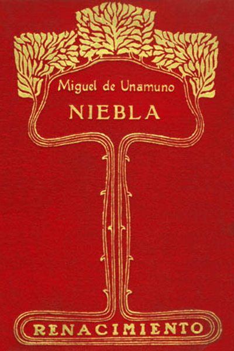
Niebla (1914)
Explora la identidad, la libertad y la relación entre el creador y sus personajes. Presenta una reflexión sobre la existencia y la conciencia de uno mismo.
Miguel de Unamuno
Ser madre sin ser esposa.
Federico García Lorca
Lo que la sangre llama, la tierra lo cobra.
Arrastra para elegir un libro
Presentación del proyecto
La presente página web tiene como propósito ampliar el análisis literario de la novela La tía Tula, escrita por Miguel de Unamuno y publicada en 1921. A través de este recorrido se estudiarán los principales acontecimientos de la obra, sus personajes, los conflictos familiares y los temas filosóficos y sociales que se desarrollan a lo largo de la narración.
La novela presenta la historia de Gertrudis, conocida como la tía Tula, una mujer que asume la responsabilidad de criar a los hijos de su familia y que construye su identidad alrededor de la maternidad, el cuidado y la protección del hogar, aunque no experimente la maternidad biológica.
El análisis también permitirá relacionar la obra con problemáticas actuales, como la responsabilidad emocional dentro de las familias, la construcción de la identidad, los vínculos afectivos, la libertad personal y la influencia de las creencias religiosas en las decisiones humanas.
Analizar la novela La tía Tula desde una perspectiva literaria, histórica, social, psicológica y filosófica, identificando los principales conflictos de sus personajes y relacionándolos con situaciones y problemáticas de la sociedad actual.
02
Miguel de Unamuno nació el 29 de septiembre de 1864 en Bilbao, España, y falleció el 31 de diciembre de 1936 en Salamanca. Fue escritor, filósofo, poeta, dramaturgo, ensayista y uno de los representantes más importantes de la Generación del 98.
Desde joven mostró interés por la literatura, la filosofía y los problemas relacionados con la existencia humana. Estudió Filosofía y Letras en la Universidad Central de Madrid y posteriormente obtuvo una cátedra de Lengua Griega en la Universidad de Salamanca, institución en la que desarrolló gran parte de su trayectoria académica.
En 1900 fue nombrado rector de la Universidad de Salamanca. Sin embargo, sus críticas a las autoridades políticas y su participación en los debates públicos de España provocaron enfrentamientos con el poder. En 1924 fue desterrado por la dictadura de Miguel Primo de Rivera a Fuerteventura. Posteriormente vivió en Francia hasta su regreso a España en 1930.
Su vida estuvo marcada por una constante preocupación por la religión, la muerte, la inmortalidad, la libertad y el sentido de la existencia humana.
Unamuno no fue únicamente un escritor interesado en contar historias: utilizó la literatura como una herramienta para explorar los conflictos internos del ser humano y cuestionar las certezas de la sociedad.
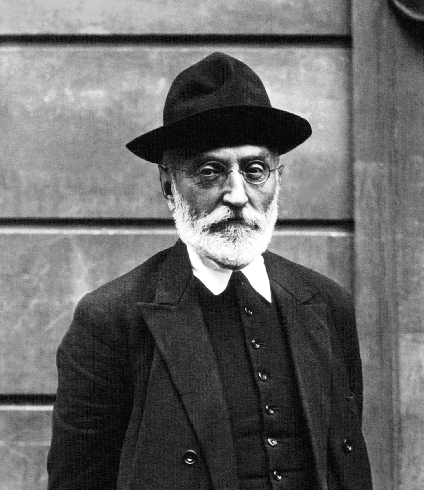
Fuentes: Casa Museo Unamuno de la Universidad de Salamanca y Biblioteca Nacional de España.
Su producción intelectual abarcó diferentes géneros literarios:
Una característica importante de su escritura es que los acontecimientos externos suelen tener menos importancia que los pensamientos, sentimientos y contradicciones de los personajes.

Explora la identidad, la libertad y la relación entre el creador y sus personajes. Presenta una reflexión sobre la existencia y la conciencia de uno mismo.

Aborda la envidia, los celos, el resentimiento y los conflictos psicológicos que pueden destruir las relaciones humanas.

Reflexiona sobre el deseo humano de vivir eternamente, el miedo a la muerte y el conflicto entre la fe y la razón.
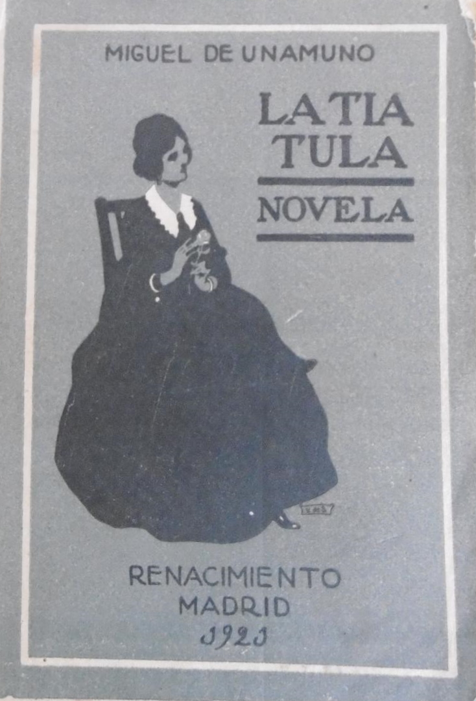
Examina la maternidad, el sacrificio, la familia, la religión y el deseo de trascendencia a través de la vida de Gertrudis.

Presenta el conflicto entre la fe, la duda religiosa, la verdad y la necesidad humana de encontrar esperanza.
Uno de los principales problemas filosóficos de Unamuno fue la preocupación por la muerte. El autor consideraba que el ser humano no solamente desea vivir, sino que también quiere continuar existiendo y conservar su identidad más allá de la muerte.
Este pensamiento se conoce como el deseo de inmortalidad. Para Unamuno, la muerte representa una de las mayores angustias humanas porque significa la posibilidad de dejar de existir y desaparecer definitivamente.
En La tía Tula, este pensamiento se manifiesta cuando Gertrudis enfrenta sus últimos momentos de vida y expresa su esperanza de reunirse con sus seres queridos después de morir. Su deseo de permanecer también aparece en la manera en que transmite sus enseñanzas a Manolita.
Unamuno consideraba que la razón y la fe no siempre ofrecen respuestas compatibles. La razón permite reconocer los límites de nuestro conocimiento, mientras que la fe representa una necesidad humana de creer y encontrar esperanza.
En su pensamiento existe una lucha constante entre querer comprender racionalmente la existencia y necesitar creer que hay algo más allá de la muerte.
En la novela, esta contradicción se observa en la relación de Gertrudis con la religión católica, especialmente en sus referencias a la Virgen María, el purgatorio, la oración y la vida después de la muerte.
Para Unamuno, las personas buscan que su vida tenga un significado que permanezca más allá de su existencia física.
En La tía Tula, Gertrudis encuentra sentido a su vida mediante el cuidado de los niños, la formación de una familia y la transmisión de sus valores. Aunque no tiene hijos biológicos propios, consigue construir una identidad materna a través de sus acciones.
Su trascendencia se representa principalmente mediante Manolita, quien conserva sus enseñanzas y continúa desempeñando un papel protector dentro de la familia.
03
La tía Tula es una novela publicada en 1921 que cuenta la historia de Gertrudis, una mujer que, después de la muerte de su hermana Rosa, asume la responsabilidad de cuidar y criar a los hijos de su familia.
La protagonista rechaza la posibilidad de construir una relación matrimonial convencional y decide dedicar gran parte de su existencia a la maternidad espiritual. A través de sus decisiones, Unamuno presenta una reflexión sobre las diferentes formas de ser madre, los sacrificios personales y las contradicciones que existen entre los deseos individuales y las responsabilidades familiares.
La novela también plantea interrogantes sobre la religión, la sexualidad, la identidad femenina y el significado de la vida.
Una característica importante es que Gertrudis no es presentada como un personaje completamente perfecto. Sus decisiones pueden interpretarse como actos de amor y protección, pero también como expresiones de control y renuncia personal.

Los cuatro capítulos permiten observar las consecuencias de las decisiones de Tula y cómo su influencia continúa después de su muerte.
En este capítulo, Gertrudis se encuentra gravemente enferma y comprende que sus últimos momentos están cerca. Su cuerpo está debilitado y comienza a pensar en la posibilidad de morir sin conocer al nuevo integrante de la familia que está por nacer.
Antes de despedirse de todos, solicita hablar a solas con Manolita. Durante esta conversación recuerda momentos de la infancia de la niña, especialmente una historia relacionada con una muñeca que había caído en un pozo.
Gertrudis utiliza este recuerdo para hablarle sobre el dolor, la pérdida y la imposibilidad de evitar ciertos acontecimientos de la vida. También le pide que no desee morir y que continúe viviendo junto a sus hermanos.
Uno de los momentos más importantes ocurre cuando le encarga a Manolita cuidar de sus hermanos después de su muerte. De esta manera, le transmite una responsabilidad que representa la continuidad de su propia función dentro de la familia.
También le solicita que le lleve dos muñecas: la de Manolita y la que ella conservaba desde su infancia. Este objeto representa los recuerdos de la niñez, los afectos y la conexión emocional entre ambas.
Interpretación: el capítulo muestra el miedo a la muerte, la necesidad de dejar un legado y la transmisión de responsabilidades entre generaciones. Gertrudis comprende que su existencia está llegando a su fin, pero intenta asegurar que sus valores permanezcan mediante Manolita.
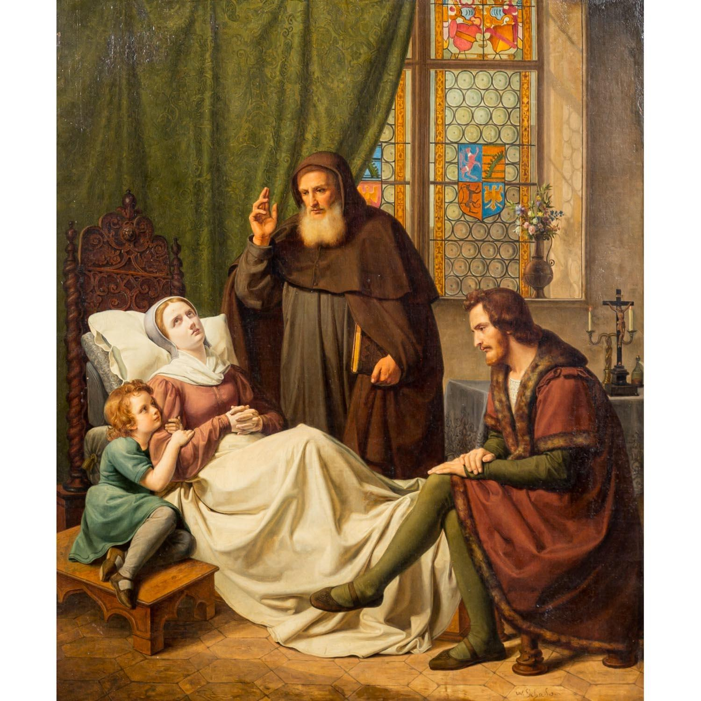
En este capítulo, Gertrudis reúne a los miembros de su familia para despedirse de ellos. Durante la conversación habla sobre su enfermedad y compara el sufrimiento físico que experimenta con el fuego del purgatorio, mostrando la influencia de sus creencias religiosas.
También expresa su tristeza por no poder conocer al nuevo integrante de la familia. Su preocupación demuestra que, incluso durante sus últimos momentos, continúa pensando en los demás y en el futuro de su hogar.
A lo largo de su despedida, ofrece consejos sobre el amor, el sacrificio y la importancia de ayudar a las personas que atraviesan situaciones difíciles. Utiliza la imagen de una persona que cae en el fango para explicar que amar también implica acompañar al otro en sus momentos más complicados, incluso cuando hacerlo representa un riesgo personal.
Finalmente, pide que oren por ella y que la Virgen la perdone. Después de sufrir un desmayo, entra en agonía y muere.
Interpretación: este capítulo representa el enfrentamiento entre la vida y la muerte, así como la esperanza religiosa de una existencia posterior. También permite reflexionar sobre el sacrificio y los límites del amor, pues Gertrudis transmite una visión de entrega que puede llegar a exigir la renuncia personal.
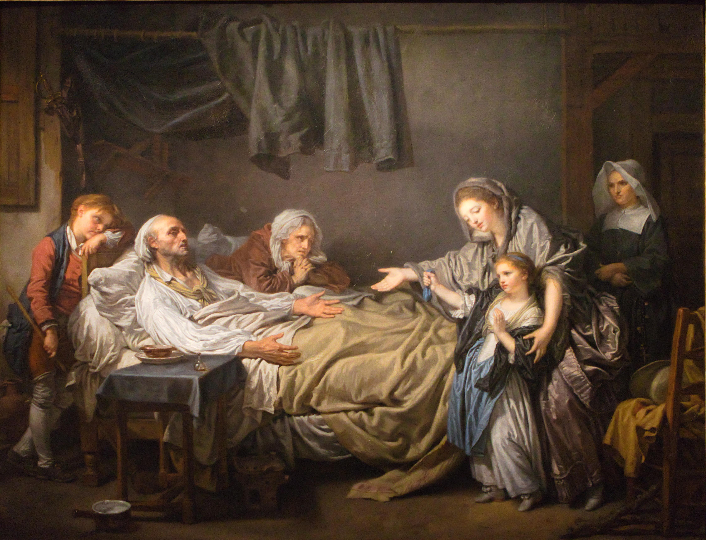
Después de la muerte de Gertrudis, la familia comienza a experimentar cambios en sus relaciones. Sin embargo, su presencia continúa siendo muy importante para todos, hasta el punto de que deja de ser llamada por su nombre y pasa a ser simplemente «la Tía».
El narrador explica que Gertrudis continúa viviendo simbólicamente dentro de la familia porque sus enseñanzas, recuerdos y valores permanecen presentes.
A pesar de que antes su presencia mantenía unido el hogar, después de su muerte aparecen divisiones y alianzas entre los hermanos. Se forman grupos con diferentes intereses y comienzan a hacerse visibles algunos conflictos que anteriormente permanecían ocultos.
Manolita adquiere especial importancia porque conserva los objetos personales de Gertrudis, sus recuerdos, sus documentos y sus enseñanzas. Incluso comienza a reproducir sus expresiones y su manera de actuar, por lo que sus hermanos llegan a llamarla «¡Otra tía!».
El capítulo también desarrolla el simbolismo de las abejas y la colmena. Unamuno compara la transmisión de la tradición familiar con la organización de una colmena, en la que el conocimiento y el trabajo se conservan mediante las generaciones.
Interpretación: la muerte física no significa necesariamente la desaparición de una persona. Gertrudis permanece mediante la memoria, la educación y los valores que transmitió. Manolita representa la continuidad de ese legado.

El último capítulo desarrolla los conflictos que continúan existiendo dentro de la familia después de la muerte de Gertrudis.
Uno de los principales acontecimientos se relaciona con Rosita, quien busca constantemente la atención de los demás y se queja de que no recibe suficiente cariño o comprensión. También expresa inconformidad con su hermano Ramiro y busca apoyo emocional en Caridad, la esposa de este.
Manolita observa estas conductas y considera que Rosita intenta llamar la atención mediante sus quejas y actitudes. Por eso, interviene para señalarle que no debe provocar celos ni generar conflictos entre los miembros de la familia.
Otro aspecto importante es la relación entre Elvira y Enrique, quienes son hermanastros y mantienen una cercanía afectiva que despierta preocupación en Manolita. Ella considera que su comportamiento puede superar los límites de una relación fraternal y les advierte sobre la importancia de no jugar con los sentimientos.
Finalmente, Manolita se enfrenta a Rosita durante una discusión relacionada con los celos y las tensiones familiares. Sin embargo, al darse cuenta de que sus palabras han sido demasiado duras, reconoce su equivocación y le pide perdón.
Rosita también reconoce que necesita perdón y termina llamándola «Tía», lo que representa la continuidad del vínculo familiar y del legado de Gertrudis.
Interpretación: el capítulo demuestra que los conflictos familiares no desaparecen con la muerte de una persona. Sin embargo, también muestra que los valores aprendidos pueden ayudar a resolverlos. Manolita comienza a ocupar el lugar de Gertrudis, aunque debe aprender a ejercer esa responsabilidad sin repetir necesariamente todos sus comportamientos.

Los capítulos XXII al XXV constituyen el cierre de la novela y desarrollan tres grandes ideas:
En conjunto, estos capítulos permiten comprender que la verdadera herencia de Gertrudis no está constituida por bienes materiales, sino por la influencia que ejerció en las personas que la rodeaban.
04
Uno de los temas centrales de la novela es la diferencia entre tener hijos biológicos y ejercer la maternidad mediante el cuidado, la educación y el afecto.
Gertrudis no tiene hijos propios, pero asume la crianza de los hijos de su hermana y desarrolla un vínculo materno con ellos. La obra permite reflexionar sobre cómo la maternidad también puede construirse mediante las acciones y las responsabilidades asumidas.
Gertrudis dedica gran parte de su vida a proteger a su familia. Sin embargo, este compromiso también implica renunciar a sus propios deseos y oportunidades personales.
El sacrificio aparece como una expresión de amor, pero también plantea una pregunta: ¿hasta qué punto una persona debe renunciar a sí misma para cuidar de los demás?
La novela muestra que una familia no está libre de conflictos por el simple hecho de compartir un hogar. Los celos, las diferencias, las preferencias y las necesidades de atención pueden generar divisiones.
La muerte es uno de los grandes conflictos de la novela. Gertrudis busca encontrar sentido a su existencia mediante la continuidad de su familia y la posibilidad de una vida después de la muerte.
Las creencias religiosas influyen en las decisiones y pensamientos de Gertrudis. La Virgen María, la oración y la vida eterna son referencias que ayudan a comprender su visión del mundo.
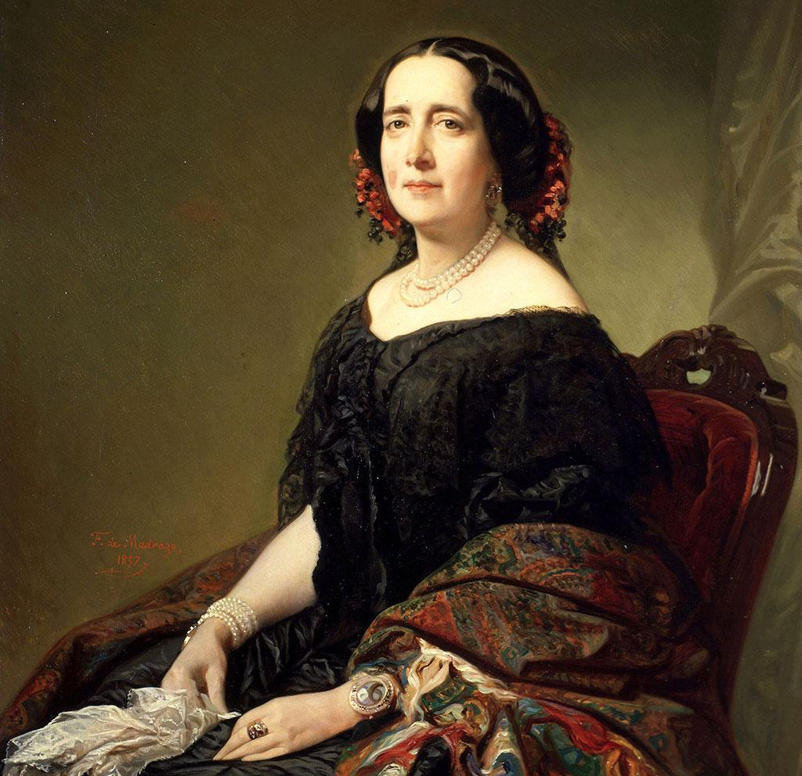
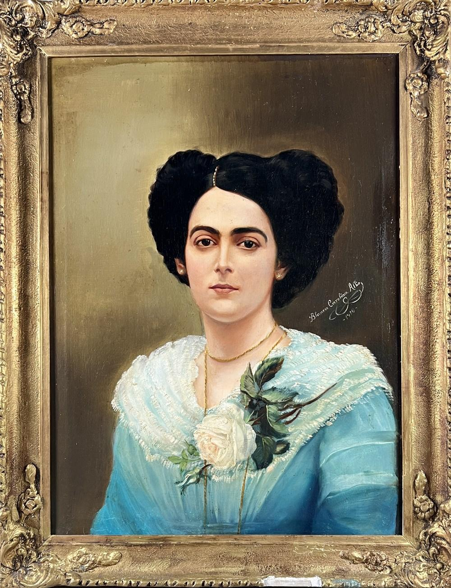
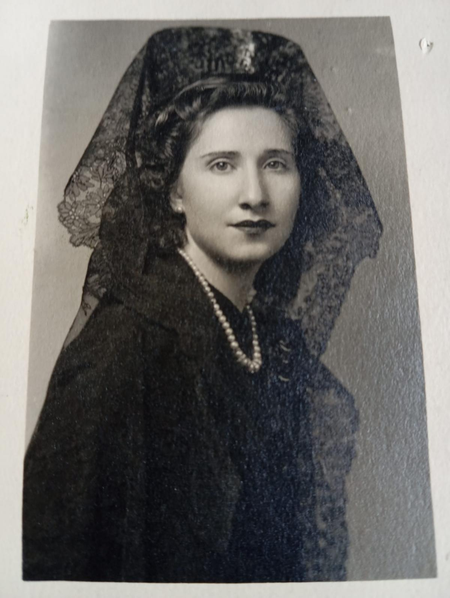
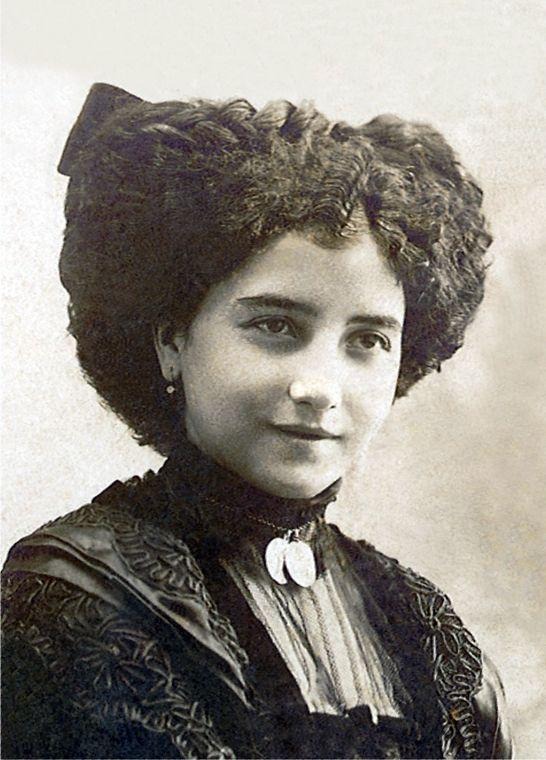
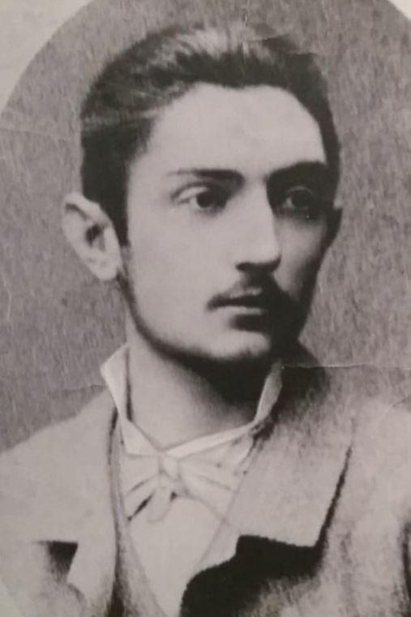
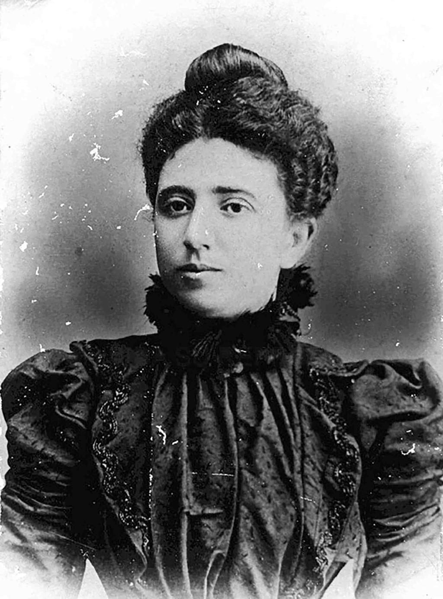
Los retratos son referencias visuales ilustrativas, no representaciones oficiales de los personajes.
Miguel de Unamuno utiliza un estilo narrativo que prioriza los conflictos interiores de los personajes sobre las descripciones detalladas de los espacios y acontecimientos. Entre sus características destacan:
| Símbolo | Significado |
|---|---|
| Las muñecas | La infancia, los recuerdos y la conexión afectiva entre Gertrudis y Manolita. |
| Las abejas y la colmena | La organización familiar, el trabajo, la transmisión de conocimientos y la continuidad espiritual. |
| La maternidad | El cuidado, la protección y la construcción de vínculos que van más allá de la biología. |
| El purgatorio | El sufrimiento, la purificación y las creencias religiosas relacionadas con la muerte. |
| El hogar | La protección, la unión familiar y el legado de Gertrudis. |
| La muerte | El límite de la existencia y la búsqueda de trascendencia. |
Estas citas proceden de la novela y son especialmente útiles para acompañar el análisis de los últimos capítulos.
«Mis cosas son las vuestras...»
Capítulo XXIII.
Interpretación: demuestra cómo Gertrudis ha construido su identidad alrededor de las necesidades de su familia, hasta el punto de considerar que su vida personal está subordinada a la de los demás.
«Te los entrego a ti...»
Capítulo XXII.
Interpretación: representa la transmisión de responsabilidades de Gertrudis hacia Manolita y el inicio de una nueva etapa en la organización familiar.
«¡Otra tía!»
Capítulo XXIV.
Interpretación: expresa cómo Manolita comienza a reproducir las enseñanzas, actitudes y comportamientos de Gertrudis.
«¡Tía! ¡Tía!»
Capítulo XXV.
Interpretación: representa el reconocimiento de Manolita como una figura de protección y unión familiar, heredera del papel que anteriormente desempeñaba Gertrudis.
Fuente del texto original: La tía Tula, capítulos XXII-XXV.
05
La novela La tía Tula fue publicada en 1921, durante una etapa de importantes transformaciones políticas, sociales y culturales en España.
Uno de los acontecimientos que marcaron este periodo fue el llamado Desastre del 98, cuando España perdió sus últimas grandes colonias de ultramar, entre ellas Cuba, Puerto Rico y Filipinas, después de la guerra con Estados Unidos.
Esta situación provocó una crisis de identidad nacional y generó cuestionamientos sobre el atraso económico, político y educativo del país.
Durante las primeras décadas del siglo XX, España experimentó diferentes tensiones sociales, desigualdades económicas, conflictos políticos y debates relacionados con la modernización de la sociedad.
Este contexto resulta importante para comprender la literatura de Unamuno, ya que sus obras reflejan preocupaciones relacionadas con la identidad, la religión, la moral y el sentido de la existencia.
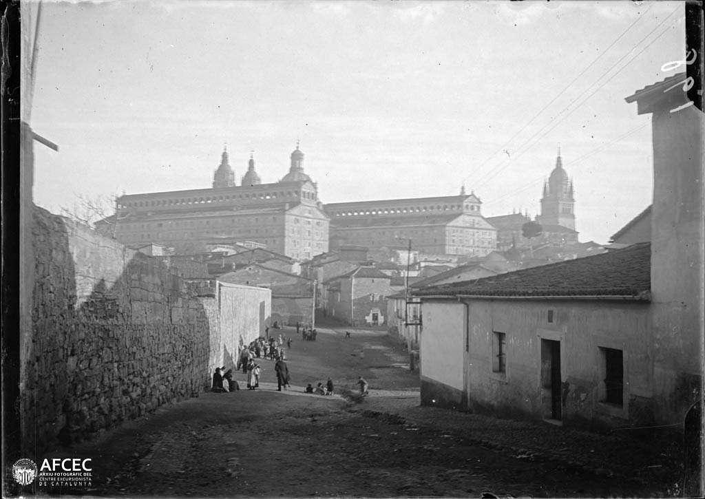
La Generación del 98 fue un grupo de escritores e intelectuales españoles que compartieron preocupaciones sobre la situación del país y los problemas de la sociedad de su tiempo. Entre sus representantes se encuentran Miguel de Unamuno, Pío Baroja, Azorín y Antonio Machado.
Sus principales preocupaciones fueron:
En La tía Tula, estas preocupaciones se relacionan principalmente con los conflictos individuales, la religión, la familia y la búsqueda de sentido de la vida.
Es importante señalar que la novela no es una narración política sobre el Desastre del 98, sino una obra que permite observar algunas de las inquietudes intelectuales y culturales de su época.
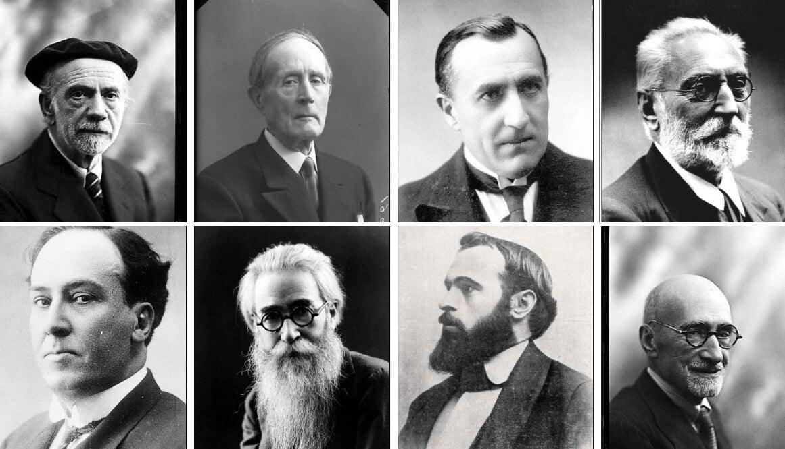
Durante finales del siglo XIX y principios del XX, las mujeres españolas enfrentaban importantes limitaciones sociales y legales. En muchos sectores de la sociedad predominaba la idea de que su principal responsabilidad debía estar relacionada con el matrimonio, la maternidad, el cuidado de los hijos y la administración del hogar.
Sin embargo, la situación no era igual para todas las mujeres. Las oportunidades dependían de factores como la clase social, el nivel educativo, el lugar de residencia y las condiciones económicas familiares.
En este periodo también comenzaron a desarrollarse movimientos que defendían una mayor participación femenina en la educación, el trabajo y la vida pública. Un acontecimiento importante ocurrió en 1910, cuando se reconoció oficialmente el acceso de las mujeres a la universidad en España sin las restricciones administrativas anteriores.
En relación con La tía Tula, Gertrudis representa a una mujer que ejerce una gran autoridad dentro del hogar y toma decisiones importantes sobre la vida familiar. Sin embargo, su identidad sigue estando profundamente vinculada con la maternidad y el cuidado.
Esto permite reflexionar sobre las expectativas sociales que condicionaban la vida de las mujeres y sobre las diferentes formas en que podían ejercer su autonomía.
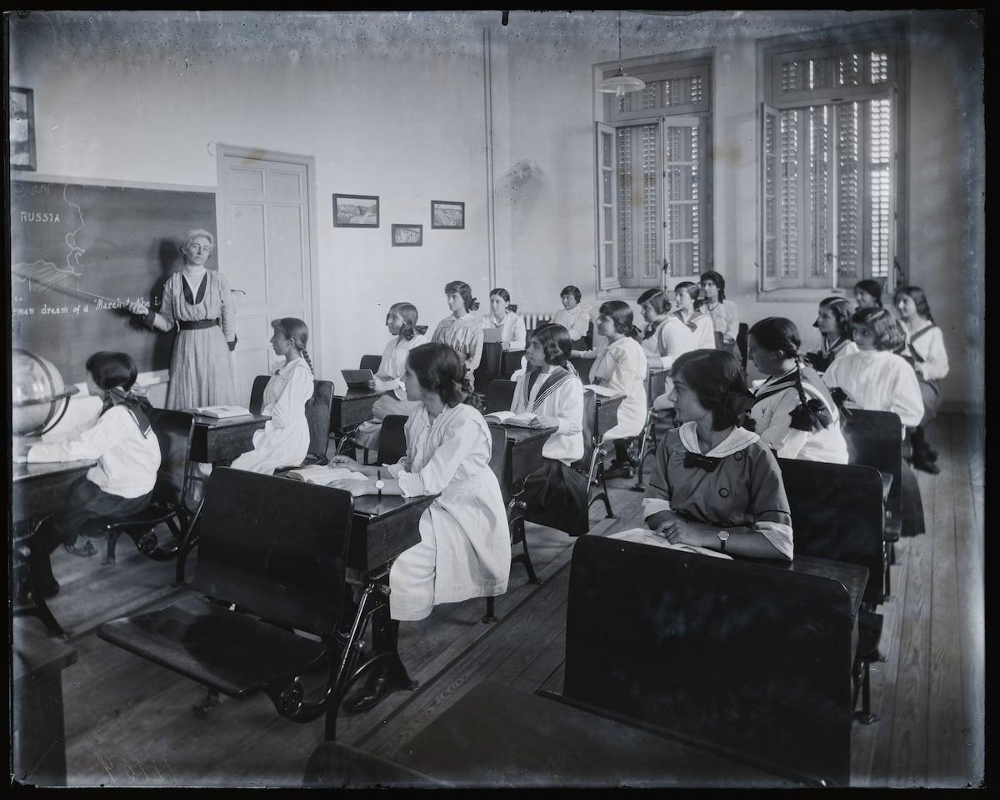
Durante este periodo, la familia era considerada una de las principales instituciones de organización social. El matrimonio, la crianza de los hijos y la transmisión de valores religiosos y morales tenían una gran importancia.
La maternidad era vista frecuentemente como una de las funciones fundamentales de las mujeres. Además, los discursos médicos e higienistas de finales del siglo XIX promovieron una maternidad relacionada con la educación, la higiene infantil y el cuidado responsable de los hijos.
En la novela, Gertrudis representa una forma particular de maternidad, ya que asume la crianza de los hijos de su familia sin haberlos concebido biológicamente. Su comportamiento permite comprender que la maternidad también puede estar relacionada con la protección, la educación, la responsabilidad y el afecto.
No obstante, la obra también permite cuestionar la idealización del sacrificio femenino, porque Gertrudis construye su identidad alrededor del bienestar de los demás y deja en segundo plano sus propios deseos.
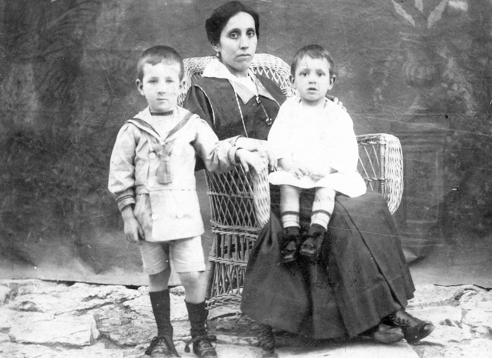
La religión católica tuvo una influencia importante en la organización social y cultural de España durante los siglos XIX y XX. Sus enseñanzas estaban presentes en la educación, las costumbres familiares, las celebraciones y las normas morales de numerosos sectores de la población.
En La tía Tula, la religión constituye un elemento fundamental para comprender la personalidad de Gertrudis. La protagonista utiliza referencias religiosas para interpretar la vida, la maternidad, el sufrimiento y la muerte. Su admiración por la Virgen María también permite comprender su ideal de maternidad y pureza.
La oración, el purgatorio y la esperanza de una vida después de la muerte son elementos que aparecen especialmente en los capítulos finales.
Relación con la obra: la religión funciona como una guía moral para Gertrudis, pero también genera conflictos relacionados con la sexualidad, el sacrificio y la renuncia personal.
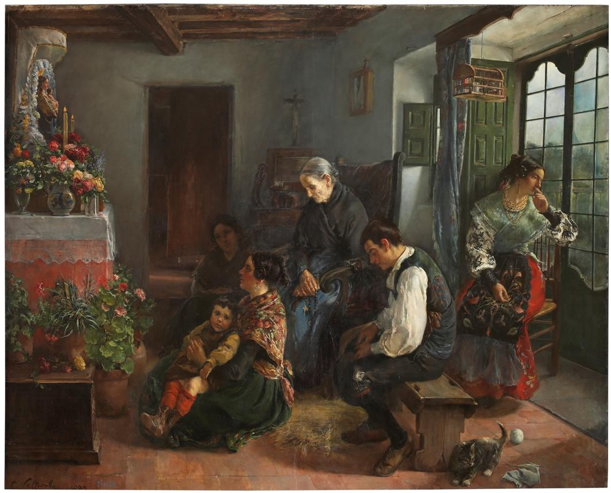
Estos tres aspectos se encuentran estrechamente relacionados en la construcción del personaje principal.
| Aspecto | Representación en Gertrudis |
|---|---|
| Mujer | Tiene autoridad, toma decisiones y dirige aspectos importantes de la vida familiar. |
| Religión | Interpreta su vida mediante sus creencias y valores católicos. |
| Maternidad | Ejerce el cuidado y la crianza de niños que no son biológicamente suyos. |
| Identidad | Construye su sentido de existencia alrededor de la familia. |
| Trascendencia | Busca permanecer mediante sus enseñanzas y la continuidad familiar. |
Una interpretación importante es que Gertrudis representa tanto la capacidad de una mujer para tomar decisiones como las contradicciones de una identidad construida alrededor del sacrificio maternal.
Por eso, no es conveniente describirla simplemente como una mujer independiente o como una figura completamente sometida a las normas sociales. Su personaje contiene ambas dimensiones y permite desarrollar diferentes interpretaciones.
Las tendencias y expectativas descritas son las de la época; no representan una realidad idéntica para todas las mujeres y familias.
06
Esta sección permite relacionar La tía Tula con otras disciplinas y manifestaciones culturales. La finalidad es demostrar que los conflictos de la novela no pertenecen únicamente al ámbito literario, sino que también pueden estudiarse desde la psicología, la filosofía, la historia, la sociología y el arte.
La psicología permite analizar las conductas, emociones y relaciones de los personajes. Para ello podemos utilizar conceptos actuales que ayudan a interpretar sus comportamientos.
Estos conceptos no son diagnósticos clínicos ni fueron utilizados por Unamuno para describir a sus personajes. Son herramientas contemporáneas de interpretación.
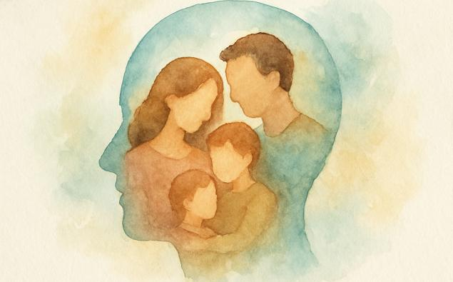
La parentificación es un concepto utilizado en psicología familiar para describir situaciones en las que un niño o adolescente asume responsabilidades emocionales o prácticas que normalmente corresponden a los adultos.
En la novela, Manolita comienza a asumir una responsabilidad importante cuando Gertrudis le encarga cuidar de sus hermanos después de su muerte. Posteriormente, Manolita se convierte en una figura protectora, interviene en los conflictos familiares y procura conservar las enseñanzas de Gertrudis.
Interpretación psicológica: puede relacionarse con la parentificación porque Manolita recibe responsabilidades de cuidado y organización familiar que pueden superar las propias de su etapa de desarrollo.
Sin embargo, no debe afirmarse que presenta necesariamente parentificación clínica, ya que la novela no ofrece información suficiente para establecerlo. También puede interpretarse como una transmisión de responsabilidades y un proceso de maduración.
Elvira y Enrique son hermanastros que mantienen una relación muy cercana. Conversan en secreto, comparten bromas y muestran una confianza que llama la atención de Manolita. Ella considera que algunas de sus muestras de afecto pueden superar los límites de una relación fraternal y les advierte sobre su comportamiento.
Interpretación psicológica: esta situación permite analizar la importancia de establecer límites en las relaciones afectivas, reconocer las intenciones de los demás y comprender cómo las conductas pueden interpretarse de diferentes maneras.
También es importante considerar que la cercanía entre ambos no demuestra por sí sola una relación romántica o sexual. El conflicto está construido principalmente desde la preocupación y la interpretación de Manolita.
En el capítulo XXV, Rosita expresa constantemente su inconformidad y considera que los demás no le prestan suficiente atención. Busca apoyo en Caridad y manifiesta quejas relacionadas con Ramiro. También parece esperar que las personas de su entorno pregunten qué le sucede.
Interpretación psicológica: su comportamiento puede relacionarse con la búsqueda de validación emocional, entendida como la necesidad de sentirse escuchada, reconocida y comprendida por los demás.
También permite reflexionar sobre los celos, la inseguridad afectiva y las dificultades para expresar directamente las necesidades emocionales. No significa que Rosita tenga un trastorno psicológico, sino que sus comportamientos permiten estudiar las necesidades afectivas presentes en las relaciones familiares.
La novela presenta diferentes cuestiones filosóficas relacionadas con la condición humana.
| Concepto | Relación con la novela |
|---|---|
| Existencia | Gertrudis busca encontrar un sentido a su vida mediante la familia y la maternidad. |
| Libertad | Sus decisiones muestran el conflicto entre sus deseos personales y sus responsabilidades. |
| Fe y razón | Sus creencias religiosas conviven con el sufrimiento y las dudas ante la muerte. |
| Inmortalidad | La protagonista desea continuar existiendo y espera reunirse con sus seres queridos. |
| Trascendencia | Su legado permanece mediante Manolita y las enseñanzas transmitidas a la familia. |
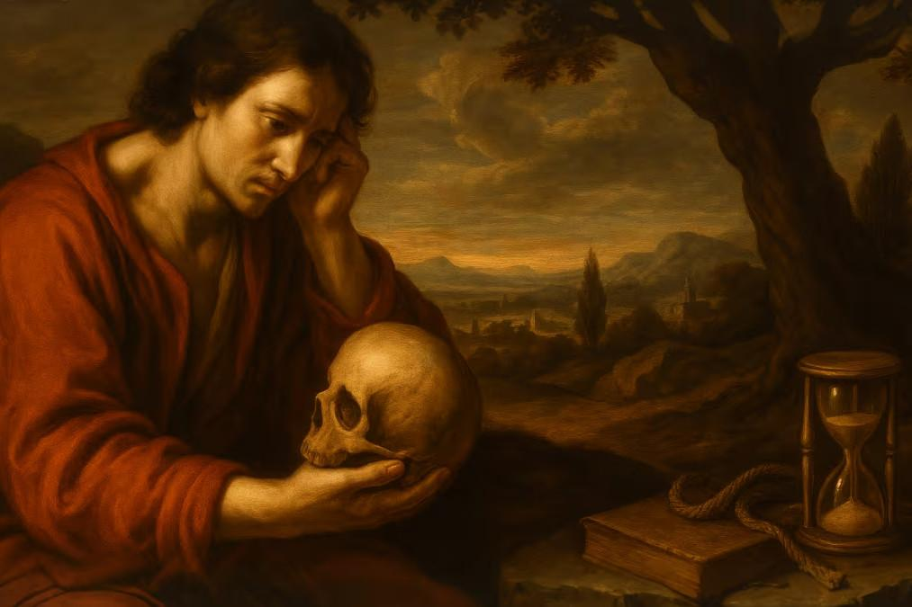
Reflexión filosófica: ¿una persona deja de existir completamente cuando muere o puede continuar viviendo mediante los recuerdos, las acciones y las enseñanzas que deja en los demás?
Esta pregunta conecta directamente con el pensamiento de Unamuno y con el final de La tía Tula.
Desde la sociología, la novela permite analizar cómo se distribuyen las responsabilidades de cuidado dentro de las familias.
A lo largo de la historia, las tías, abuelas, hermanas mayores y otras mujeres han desempeñado funciones importantes en la crianza de los niños, especialmente cuando los padres estaban ausentes, fallecían o no podían asumir todas las responsabilidades.
Estas funciones no han sido idénticas en todas las sociedades ni en todas las familias. Sin embargo, muestran la importancia de las redes de apoyo y del cuidado compartido.
En La tía Tula, Gertrudis representa precisamente a una figura cuidadora que adquiere autoridad dentro del hogar y se convierte en una referencia para los niños.
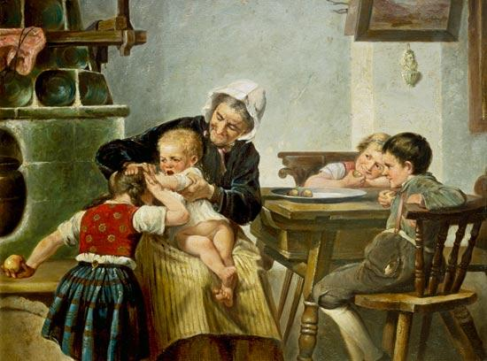
Relación con la actualidad: actualmente también existen familias en las que las abuelas, tías y otros familiares participan activamente en la crianza. Esto demuestra que la formación y protección de los niños puede involucrar a diferentes integrantes de una red familiar.
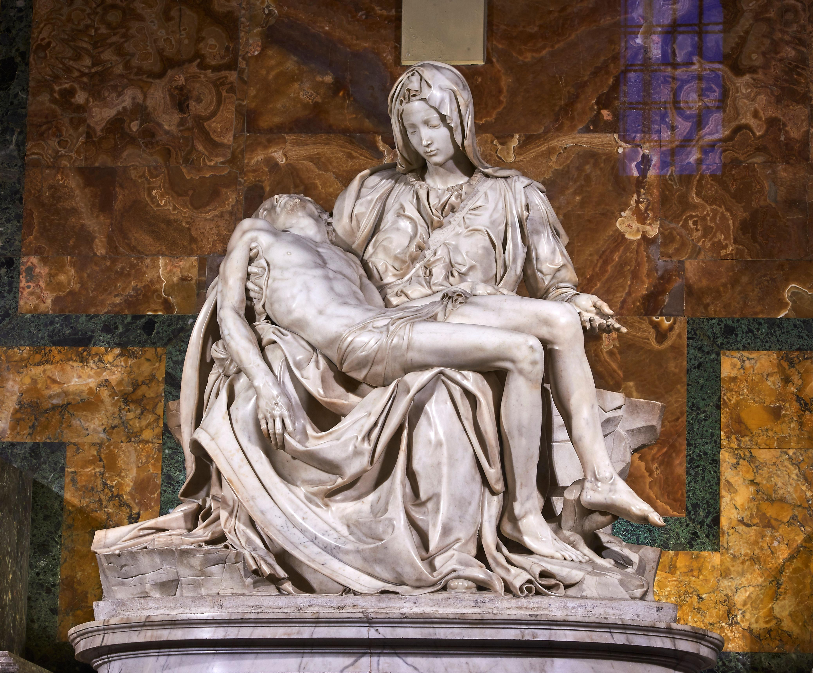
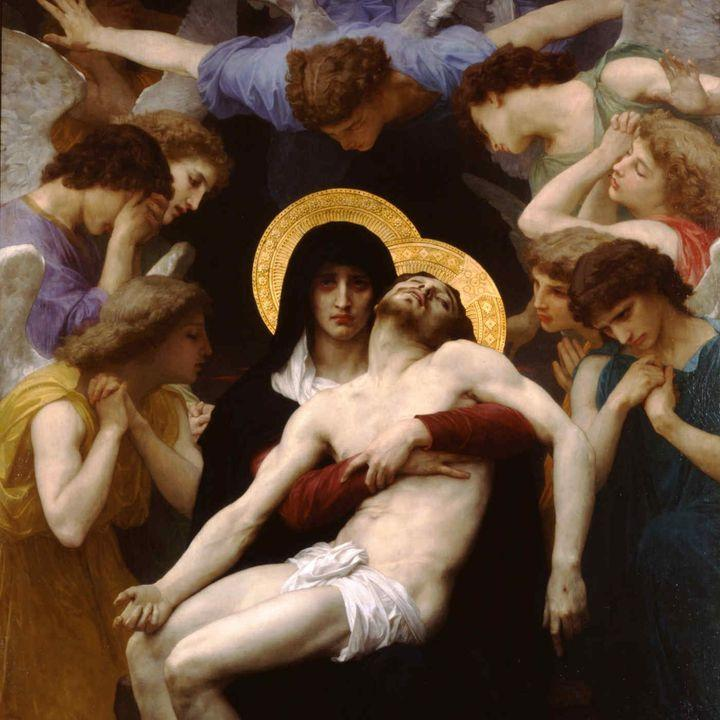
La obra La Piedad, realizada por Miguel Ángel entre 1498 y 1499, representa a la Virgen María sosteniendo el cuerpo sin vida de Jesucristo después de la crucifixión. Esta escultura constituye una de las representaciones artísticas más reconocidas del dolor maternal, el amor y la muerte.
Su relación con La tía Tula puede establecerse mediante una comparación simbólica: ambas obras permiten reflexionar sobre la figura materna frente a la pérdida y la muerte. En el caso de Gertrudis, su despedida de Manolita y de los demás miembros de la familia refleja una preocupación maternal que permanece incluso cuando está a punto de morir.
Interpretación: la relación entre ambas obras no significa que Unamuno se haya inspirado directamente en la escultura para escribir la novela. Se trata de una conexión artística que permite comparar la representación del amor maternal y el sufrimiento.
La figura de Gertrudis puede compararse con otros personajes femeninos que ejercen autoridad, transmiten tradiciones y desempeñan funciones fundamentales dentro de sus familias. Una comparación interesante es con Úrsula Iguarán, personaje de Cien años de soledad, de Gabriel García Márquez.
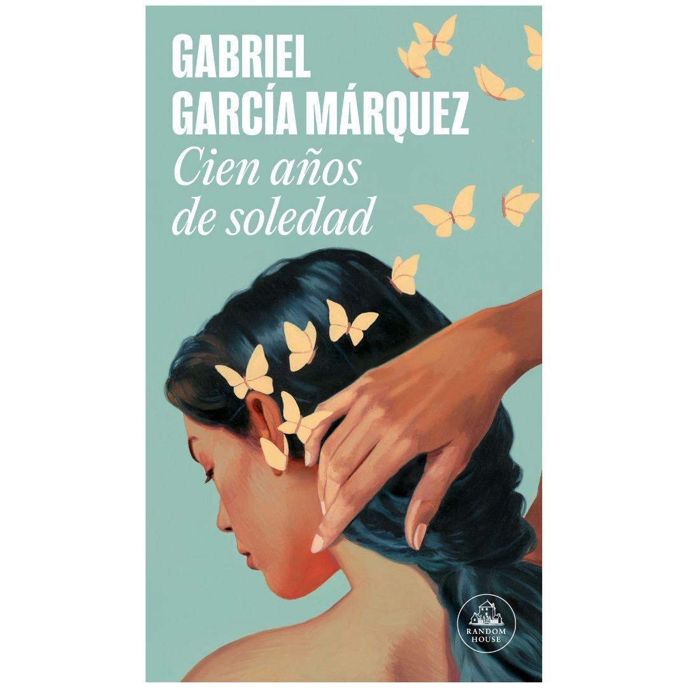
| Aspecto | Gertrudis – La tía Tula | Úrsula – Cien años de soledad |
|---|---|---|
| Función familiar | Cuida y educa a los hijos de su familia. | Sostiene y organiza a varias generaciones de los Buendía. |
| Autoridad | Influye en las decisiones y comportamientos del hogar. | Es una de las figuras de mayor autoridad en su familia. |
| Maternidad | Representa la maternidad espiritual. | Representa la maternidad biológica y la continuidad familiar. |
| Memoria | Transmite enseñanzas que conserva Manolita. | Conserva la memoria y las tradiciones familiares. |
| Trascendencia | Permanece mediante sus enseñanzas. | Permanece mediante la historia de varias generaciones. |
Conclusión comparativa: ambos personajes muestran la importancia de las mujeres en la conservación de la identidad familiar. Sin embargo, mientras Gertrudis construye su maternidad principalmente mediante el cuidado de hijos ajenos, Úrsula ejerce su influencia a través de varias generaciones de descendientes.
Las siguientes películas permiten establecer relaciones temáticas con La tía Tula. No son adaptaciones cinematográficas de la novela.
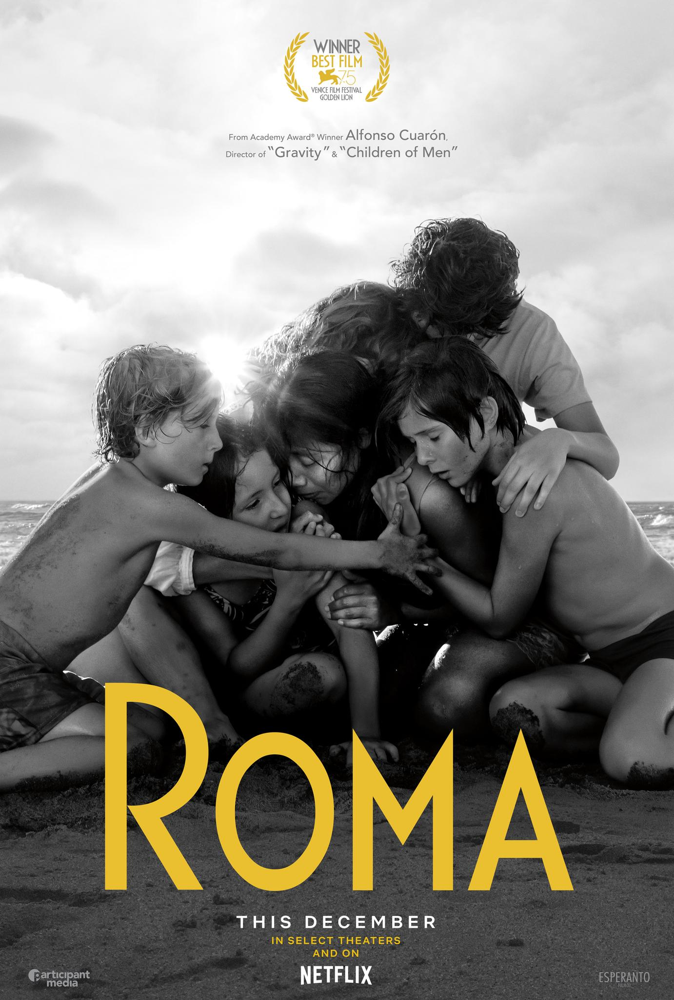
Director: Alfonso Cuarón.
Tema: maternidad y cuidado más allá de los vínculos biológicos.
La película presenta a Cleo, una trabajadora doméstica que desarrolla un fuerte vínculo afectivo con los niños de la familia para la que trabaja. Su relación con La tía Tula se encuentra en la importancia del cuidado, el afecto y la responsabilidad emocional que pueden construirse más allá de los vínculos biológicos. Ambas obras permiten reflexionar sobre el significado de cuidar y proteger a otras personas.
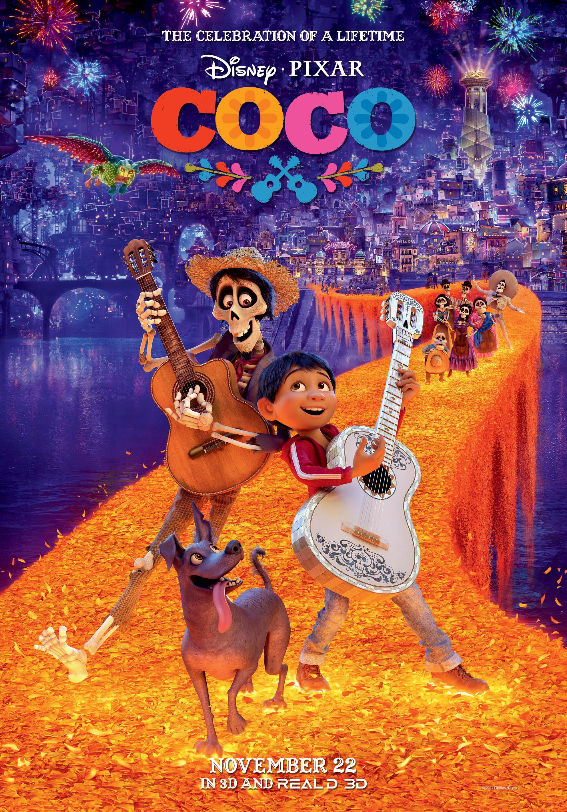
Estudio: Pixar.
Tema: memoria familiar y permanencia después de la muerte.
La película muestra cómo los recuerdos y las historias familiares permiten mantener presente a quienes han fallecido. Esta idea se relaciona con el final de La tía Tula, donde Gertrudis continúa viviendo simbólicamente mediante las enseñanzas, los recuerdos y las acciones de Manolita. Ambas obras destacan la importancia de la memoria como forma de permanencia.
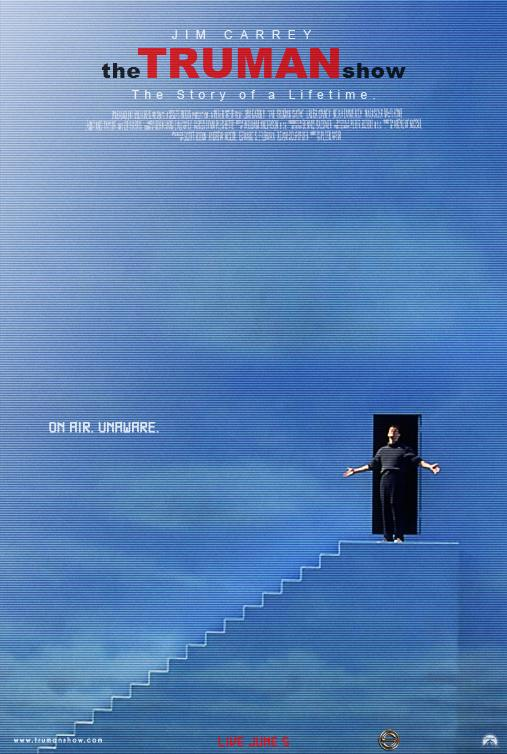
Director: Peter Weir.
Tema: identidad, libertad y cuestionamiento de la realidad.
La película presenta a Truman, un hombre que descubre que su vida ha sido organizada y controlada por otras personas sin que él lo sepa. Su relación con La tía Tula se encuentra en la reflexión sobre la libertad individual, las decisiones personales y la influencia del entorno en la construcción de la identidad. Mientras Truman cuestiona la realidad en la que vive, Gertrudis enfrenta las expectativas sociales y familiares que influyen en su forma de vivir.
Conclusión de las conexiones cinematográficas: estas tres películas permiten analizar desde diferentes perspectivas temas presentes en La tía Tula: la maternidad, el cuidado, la memoria, la muerte, la identidad y la libertad. Las comparaciones son temáticas y no implican que las películas estén basadas en la novela.
07
Se propone comparar las responsabilidades familiares y las expectativas sociales de la época de Gertrudis con las que existen actualmente.
| Aspecto | Época de la novela | Actualidad |
|---|---|---|
| Maternidad | Frecuentemente relacionada con la función familiar de la mujer. | Puede entenderse desde distintas formas de crianza y cuidado. |
| Responsabilidad familiar | Existían expectativas tradicionales sobre los roles de hombres y mujeres. | Hay mayor diversidad de modelos familiares y distribución de responsabilidades. |
| Educación femenina | Las oportunidades eran más limitadas y desiguales. | Las mujeres cuentan con mayores oportunidades educativas y profesionales. |
| Religión | Tenía una fuerte influencia en numerosos ámbitos de la sociedad. | Su influencia varía según las personas y los contextos sociales. |
| Cuidado de los niños | Frecuentemente recaía sobre las mujeres de la familia. | Puede compartirse entre familiares, instituciones y cuidadores. |
Relaciona cada elemento con su significado.
La novela La tía Tula permite comprender que la familia, la maternidad y la identidad son elementos que se construyen mediante decisiones, responsabilidades y relaciones afectivas.
Gertrudis representa una forma de maternidad que no depende exclusivamente de los vínculos biológicos, sino también del compromiso de cuidar, proteger y educar a otras personas. Sin embargo, su historia también invita a cuestionar los sacrificios que una persona puede realizar por su familia y las consecuencias que estos pueden tener sobre su propia identidad.
Los capítulos XXII, XXIII, XXIV y XXV muestran que la muerte no elimina necesariamente la influencia de una persona. A través de Manolita, Gertrudis continúa presente en la familia mediante sus enseñanzas y valores.
Finalmente, las conexiones con la psicología, la filosofía, la historia, la sociología, el arte y el cine permiten reconocer que los problemas planteados por Unamuno siguen siendo relevantes en la actualidad, especialmente aquellos relacionados con la libertad, la identidad, la responsabilidad afectiva y el sentido de la existencia.
La tía Tula nos permite reflexionar sobre el verdadero significado de la maternidad y el papel que desempeñan las personas que, sin tener vínculos biológicos, se convierten en figuras fundamentales para una familia. También nos enseña que el amor y el cuidado pueden dejar huellas que permanecen incluso después de la muerte. Sin embargo, consideramos importante reconocer que ayudar a los demás no debería significar renunciar completamente a nuestros propios sueños, necesidades e identidad. La historia de Gertrudis nos invita a valorar el cuidado familiar, pero también a encontrar un equilibrio entre el bienestar de los demás y el propio.
08
Esta investigación presenta diferentes interpretaciones sobre el feminismo, la maternidad, la castidad y el amor espiritual en la novela.
Presentación del proyecto
La presente página web tiene como propósito ampliar el análisis literario de Bodas de sangre, una de las obras teatrales más representativas del escritor español Federico García Lorca, estrenada en 1933.
La obra desarrolla una historia marcada por el amor, la pasión, los conflictos familiares, las tradiciones sociales y el destino trágico. A través de sus personajes, Lorca representa una sociedad en la que las normas de honor, las expectativas familiares y las convenciones sociales pueden entrar en conflicto con los sentimientos y deseos individuales.
La historia gira alrededor de una boda que termina convirtiéndose en una tragedia debido a la relación entre la Novia y Leonardo, quienes no consiguen desprenderse de sus sentimientos del pasado. Este conflicto desencadena una serie de acontecimientos que conducen a la muerte del Novio y de Leonardo.
Mediante este recorrido se estudiará la vida del autor, el contexto histórico y social de la obra, su estructura teatral, los personajes, los símbolos y los principales temas que permiten comprender su significado.
También se establecerán conexiones con la psicología, la filosofía, la historia, la sociología, el arte y el cine, para demostrar que los conflictos presentados en la obra continúan siendo relevantes en la actualidad.
Analizar la obra Bodas de sangre desde una perspectiva literaria, histórica, social, psicológica y filosófica, identificando los conflictos de sus personajes, sus símbolos y las circunstancias que conducen al desenlace trágico.
02
Federico García Lorca nació el 5 de junio de 1898 en Fuente Vaqueros, Granada, España, y fue asesinado en agosto de 1936, al comienzo de la Guerra Civil española.
Fue poeta, dramaturgo, músico y uno de los escritores más importantes de la literatura española del siglo XX. Desde pequeño mostró interés por la música, la literatura y las manifestaciones culturales populares de Andalucía.
Estudió en la Universidad de Granada y posteriormente se trasladó a Madrid, donde vivió en la Residencia de Estudiantes. Allí entró en contacto con importantes artistas e intelectuales de su época, entre ellos Salvador Dalí y Luis Buñuel.
Su producción literaria estuvo profundamente influenciada por la cultura andaluza, las canciones populares, el folclore, el simbolismo y las tradiciones españolas.
Lorca también desarrolló una importante actividad teatral. Consideraba que el teatro debía ser un medio de expresión artística y, al mismo tiempo, una herramienta para acercar la cultura a la sociedad.
Durante los últimos años de su vida participó en el proyecto teatral universitario La Barraca, que tenía como objetivo llevar obras clásicas del teatro español a diferentes pueblos del país.
Su vida terminó trágicamente en 1936, cuando fue detenido y fusilado en los primeros meses de la Guerra Civil española. Su muerte convirtió su figura en uno de los símbolos de la represión cultural y política de aquel periodo.
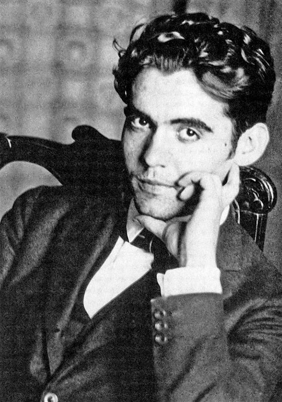
Federico García Lorca desarrolló su obra en diferentes géneros:
Una de las características más importantes de su literatura es la combinación de elementos populares y tradicionales con recursos innovadores de la literatura moderna.
En sus obras aparecen frecuentemente personajes que desean vivir libremente, pero que se enfrentan a las restricciones de su entorno familiar y social. En Bodas de sangre, esta característica se observa especialmente en la Novia y Leonardo, quienes experimentan un conflicto entre sus sentimientos y las obligaciones sociales.
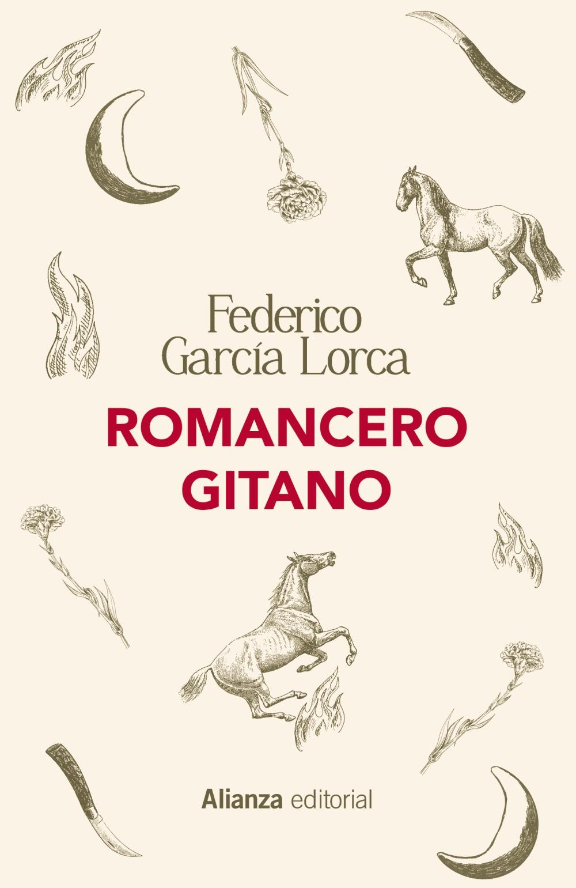
Colección de poemas que combina la tradición del romance español con elementos simbólicos y populares. Aborda temas como el destino, la libertad, la muerte y la cultura gitana.
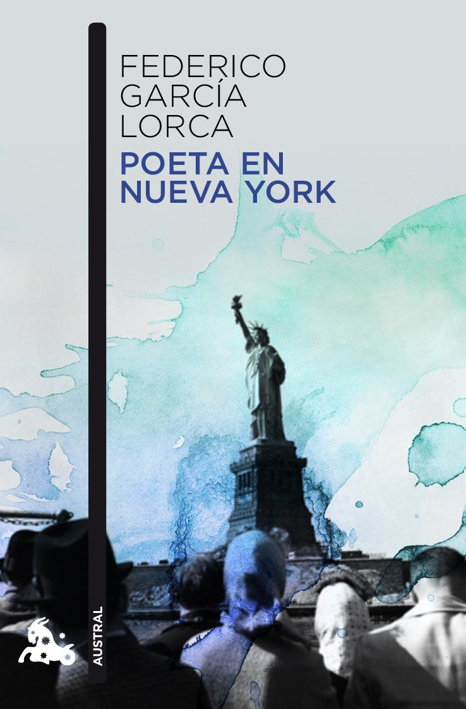
Obra poética que expresa la angustia del ser humano frente a la modernidad, la industrialización, la desigualdad y la deshumanización.
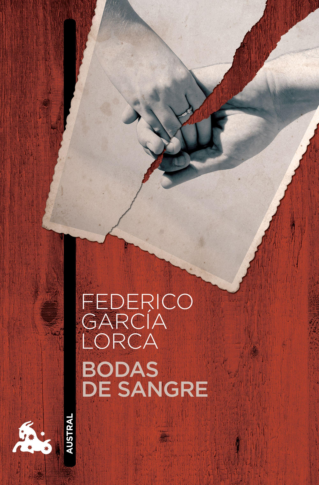
Tragedia que presenta un conflicto entre el amor, la pasión, el honor familiar y las normas sociales, con un desenlace marcado por la muerte.
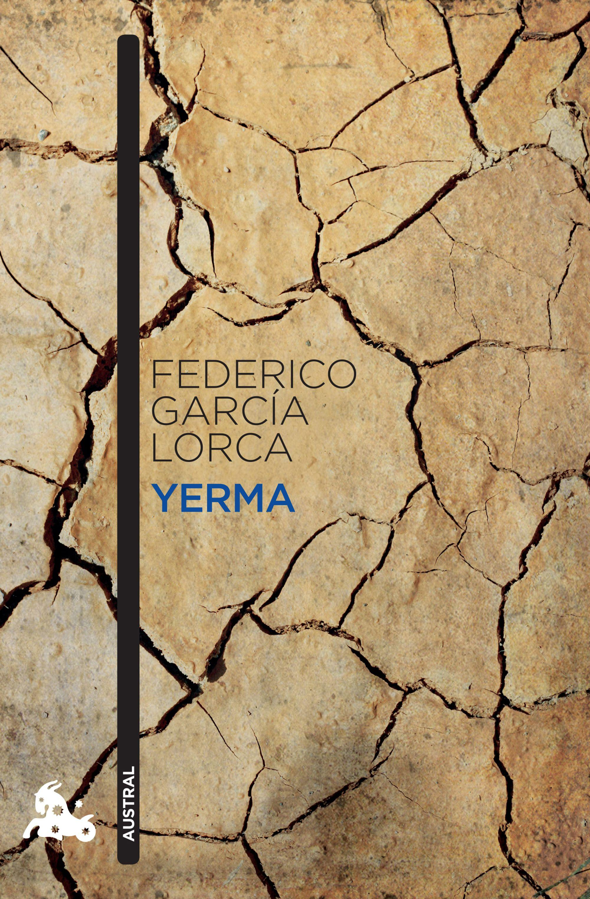
Presenta la frustración de una mujer que desea ser madre y no consigue tener hijos. Explora la maternidad, la presión social y la insatisfacción personal.
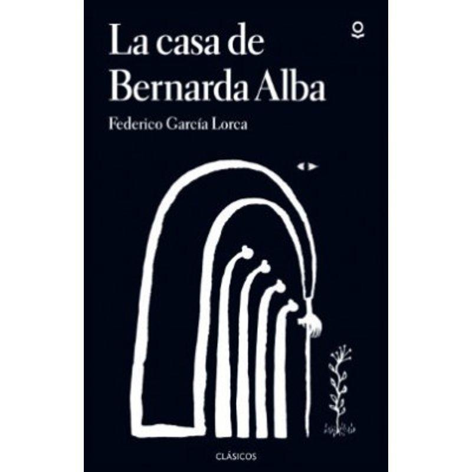
Representa la represión, la autoridad familiar, el control social y la falta de libertad de las mujeres dentro de una familia.
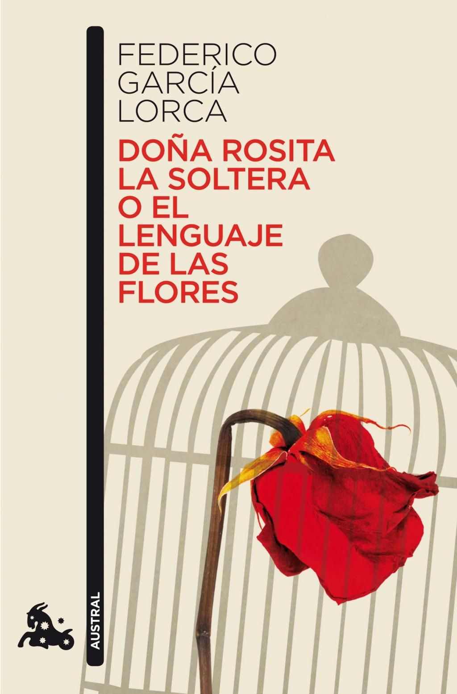
Aborda el paso del tiempo, la espera amorosa, las expectativas sociales y las consecuencias de vivir condicionada por las promesas de otras personas.
Uno de los conflictos más importantes en la literatura de Lorca es la lucha entre los deseos personales y las restricciones impuestas por la sociedad.
En Bodas de sangre, la Novia desea seguir sus sentimientos hacia Leonardo, pero también debe responder a las expectativas familiares y sociales relacionadas con el matrimonio y el honor.
La obra muestra cómo las convenciones sociales pueden convertirse en una fuerza que condiciona las decisiones individuales.
La muerte aparece frecuentemente en la literatura de Lorca como una fuerza inevitable que acompaña a los personajes y transforma sus vidas.
En Bodas de sangre, el desenlace trágico está anunciado mediante diferentes símbolos, especialmente la Luna y la Mendiga, que contribuyen a crear una atmósfera de fatalidad.
Lorca presenta el amor como una fuerza intensa que puede generar felicidad, pero también sufrimiento y destrucción cuando entra en conflicto con las obligaciones sociales.
La relación entre la Novia y Leonardo demuestra que los sentimientos no desaparecen necesariamente por las decisiones que las personas toman.
En muchas de sus obras, Lorca representa a mujeres que viven bajo normas familiares y sociales restrictivas. Sus personajes femeninos desean tomar decisiones sobre su vida, su sexualidad y su futuro, pero frecuentemente se encuentran con obstáculos relacionados con el honor, el matrimonio y las tradiciones.
Lorca incorporó canciones, leyendas, imágenes rurales y tradiciones populares en su literatura. En Bodas de sangre, estos elementos permiten transformar una historia familiar en una tragedia de significado universal.
03
Bodas de sangre es una tragedia teatral escrita por Federico García Lorca en 1932 y estrenada el 8 de marzo de 1933 en el Teatro Beatriz de Madrid.
La historia está inspirada en un acontecimiento real ocurrido en 1928 en el Cortijo del Fraile, en Níjar, provincia de Almería. El suceso fue conocido por medio de la prensa y relataba la fuga de una mujer poco antes de su boda y el posterior asesinato de uno de sus familiares.
Lorca tomó como punto de partida este acontecimiento, pero transformó la noticia en una tragedia literaria en la que incorporó elementos poéticos, simbólicos y mitológicos.
La obra presenta una historia en la que el amor, la pasión, el honor, la venganza y las tradiciones familiares se enfrentan hasta provocar un desenlace mortal.
Uno de los aspectos más importantes es que el conflicto no se limita a un triángulo amoroso. También representa una sociedad rural donde las familias, la reputación, el matrimonio y las antiguas rivalidades tienen una gran influencia sobre las decisiones individuales.
La obra está dividida en tres actos y siete cuadros, y combina diálogos en prosa con fragmentos poéticos y canciones populares.
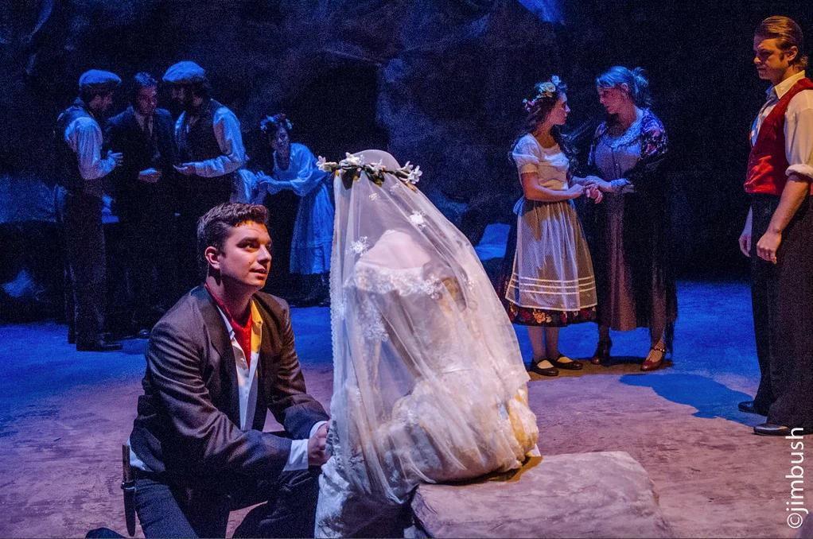
A continuación se presenta el desarrollo de cada cuadro, siguiendo la estructura original de la obra.
La obra comienza en la casa de la Madre, quien conversa con su hijo, el Novio. Este le comunica que tiene intención de casarse con una joven de la comarca y le pide una navaja para cortar uvas.
Sin embargo, la Madre siente un profundo rechazo hacia las armas blancas porque su esposo y su hijo mayor fueron asesinados durante una antigua rivalidad con la familia Félix.
Durante la conversación, la Madre recuerda las pérdidas que ha sufrido y manifiesta su temor a que la violencia vuelva a destruir a su familia.
Posteriormente, el Novio le explica que la Novia había mantenido una relación sentimental con Leonardo, integrante de la familia que la Madre considera enemiga.
Aunque la Madre tiene dudas sobre el matrimonio, termina aceptando la decisión de su hijo y ambos comienzan a preparar la boda.
Interpretación: este primer cuadro presenta dos elementos fundamentales: el deseo del Novio de formar una familia y el miedo de la Madre a repetir la tragedia del pasado. Desde el inicio, las armas y las rivalidades familiares funcionan como presagios de muerte.
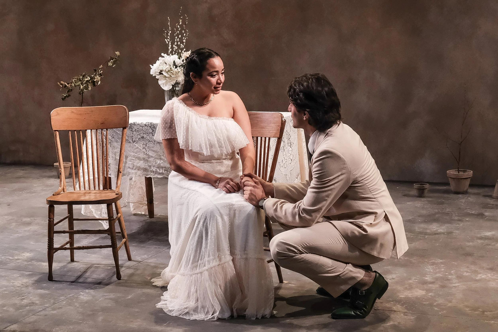
La acción se traslada a la casa de Leonardo, donde se encuentran su esposa, su suegra y el niño que ha tenido con su mujer.
La Suegra y la Mujer cantan una nana para dormir al pequeño. La canción describe un caballo que no quiere beber agua y que presenta imágenes relacionadas con heridas, sangre y peligro. La canción funciona como una anticipación simbólica de los acontecimientos trágicos que ocurrirán posteriormente.
Durante la conversación, la Suegra pregunta por el comportamiento de Leonardo y por sus constantes salidas a caballo. Su esposa manifiesta preocupación porque él parece inquieto y distante.
Más adelante, la Mujer descubre que Leonardo continúa interesado en la Novia, a pesar de que ella está comprometida con otro hombre.
Interpretación: este cuadro muestra que Leonardo no ha superado su antigua relación amorosa. También introduce el caballo como símbolo de pasión, deseo y fuerza instintiva, anticipando la huida de los amantes.
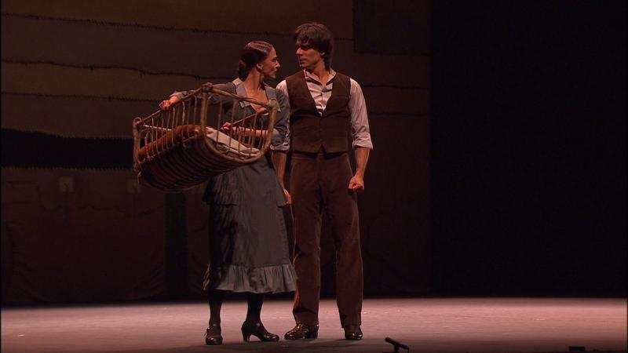
La escena se desarrolla en la casa de la Novia, donde ella vive con su Padre y recibe la visita de la Criada.
El Padre conversa con la Madre y el Novio sobre los preparativos de la boda y las condiciones económicas de las familias. Ambos padres consideran que el matrimonio permitirá unir sus propiedades y asegurar la continuidad familiar.
La Madre expresa su deseo de tener nietos y espera que el matrimonio proporcione estabilidad y felicidad a su hijo.
Mientras tanto, la Novia demuestra poco entusiasmo ante los preparativos. La Criada sospecha que todavía siente algo por Leonardo, especialmente cuando descubre que él ha estado cerca de la casa.
La tensión aumenta porque la Novia intenta ocultar sus sentimientos y mantener la apariencia de que acepta plenamente el matrimonio.
Interpretación: este cuadro muestra cómo el matrimonio también está relacionado con los intereses familiares, económicos y sociales. La Novia se encuentra atrapada entre las expectativas de su familia y sus sentimientos personales.
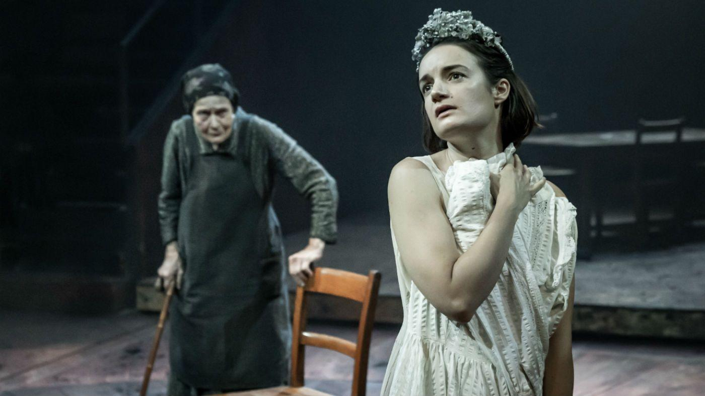
El segundo acto comienza en la habitación de la Novia, durante los preparativos de la boda. La Criada la ayuda a vestirse y procura que se muestre alegre ante la celebración.
Sin embargo, la Novia continúa manifestando inquietud y falta de entusiasmo. La Criada intenta animarla, pero descubre que Leonardo ha llegado a la casa antes de la ceremonia.
Durante el encuentro, Leonardo y la Novia mantienen una conversación cargada de tensión emocional. Ambos reconocen que todavía existen sentimientos entre ellos, aunque intentan justificar sus decisiones y recordar las circunstancias que los separaron.
Leonardo le reclama que esté a punto de casarse con otro hombre, mientras ella intenta defender su decisión. Finalmente, la Novia se prepara para la ceremonia y procura cumplir con las expectativas familiares.
Interpretación: este cuadro muestra el conflicto interno de la Novia y la imposibilidad de Leonardo de aceptar que la relación terminó. El matrimonio comienza a convertirse en una obligación social que entra en contradicción con los sentimientos de los protagonistas.
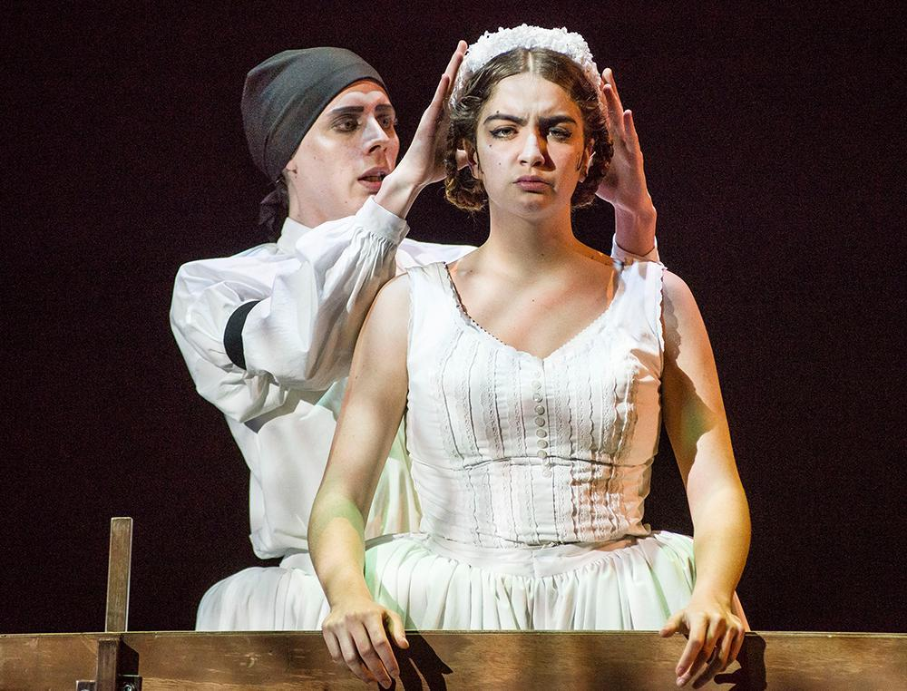
En este cuadro se desarrolla la celebración de la boda. Los invitados cantan y bailan, celebrando la unión de los recién casados.
Al principio, el ambiente es festivo y parece que el matrimonio se ha realizado con normalidad. Sin embargo, la Novia se encuentra cada vez más inquieta y decide retirarse. Leonardo también desaparece de la celebración. Poco después, la Mujer de Leonardo descubre que su esposo y la Novia han escapado juntos a caballo.
La noticia provoca una gran conmoción entre los invitados y especialmente en la Madre, quien interpreta lo sucedido como una nueva ofensa contra su familia.
El Novio, lleno de ira y humillación, decide perseguir a los fugitivos. La Madre, a pesar de su miedo a la violencia, lo impulsa a buscar a la pareja.
Interpretación: este cuadro representa el momento en que el conflicto emocional se transforma en una tragedia familiar. La huida de la Novia y Leonardo destruye la celebración y activa el ciclo de venganza que la Madre tanto temía.
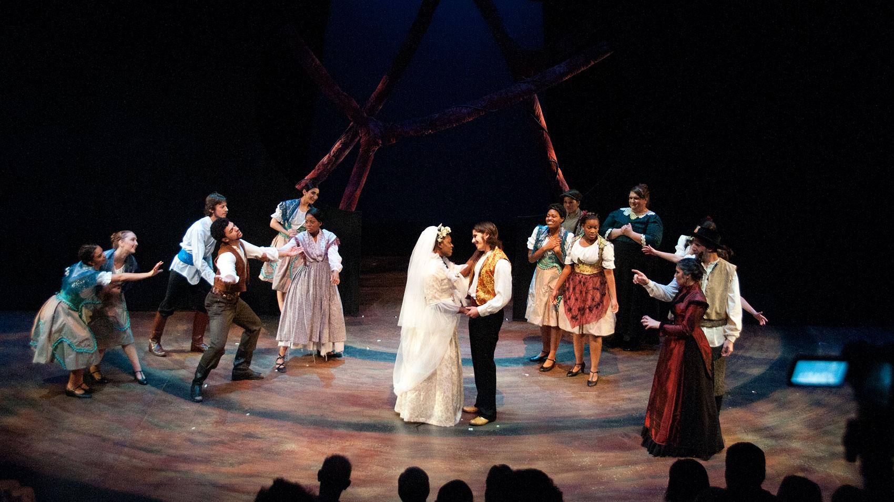
La acción se traslada a un bosque durante la noche. Tres Leñadores conversan sobre la huida de Leonardo y la Novia, mientras reflexionan sobre la fuerza de la sangre y el destino.
En este espacio aparece la Luna, representada como un personaje sobrenatural que desea iluminar el bosque para que los fugitivos sean encontrados. También aparece una Mendiga, que representa simbólicamente a la Muerte. Su presencia contribuye a crear una atmósfera de fatalidad.
La Luna y la Mendiga colaboran para que el Novio pueda encontrar a los amantes. Cuando finalmente se encuentran Leonardo y el Novio, ambos se enfrentan y terminan matándose mutuamente con sus armas.
La Novia presencia las consecuencias de la persecución y queda atrapada en el dolor de haber provocado, junto con Leonardo, una tragedia que termina destruyendo a varias personas.
Interpretación: el bosque representa un espacio simbólico donde desaparecen las reglas de la vida cotidiana y domina la fatalidad. La Luna y la Muerte convierten el desenlace en una tragedia que parece inevitable.
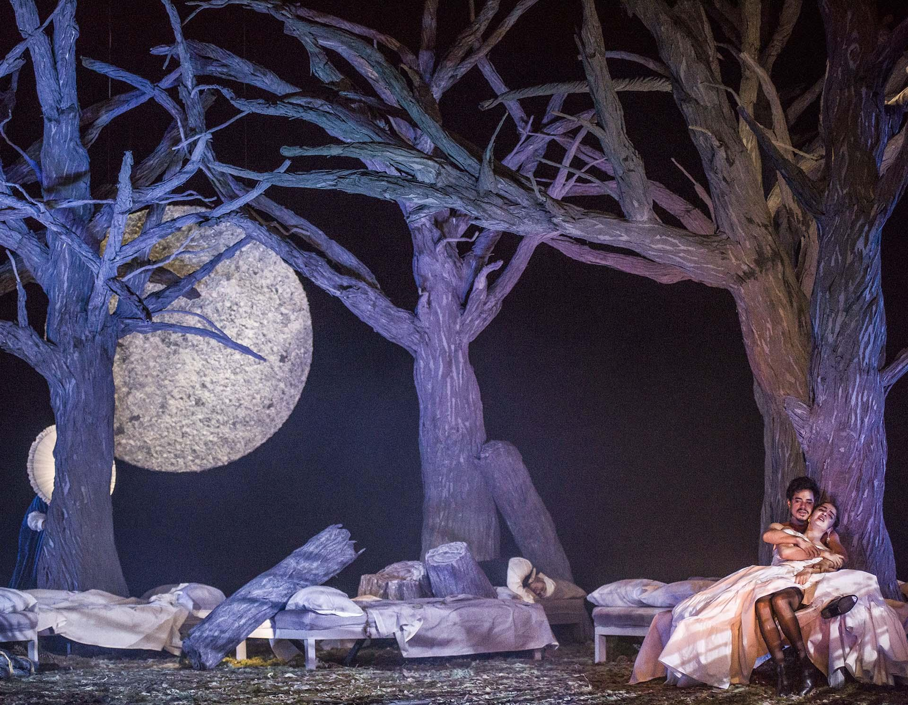
El último cuadro vuelve al espacio doméstico de la Madre, donde dos muchachas realizan labores relacionadas con la preparación de lana y cantan canciones que evocan la muerte. La Mendiga anuncia que Leonardo y el Novio han muerto.
La Madre recibe la noticia con un dolor profundo. Después de haber perdido anteriormente a su esposo y a su hijo mayor, ahora también ha perdido a su último hijo.
La Novia regresa y se presenta ante la Madre, quien la recibe con rechazo y sufrimiento. La joven intenta explicar que no huyó por desprecio hacia el Novio, sino porque sus sentimientos por Leonardo fueron más fuertes que su voluntad.
La Novia afirma que desea morir y que no puede encontrar tranquilidad después de lo sucedido. También insiste en que conserva su honra, aunque reconoce su responsabilidad en la tragedia.
Finalmente, la Madre y la Novia permanecen juntas, unidas por el dolor y la pérdida. La obra termina con una lamentación sobre los cuchillos y la muerte de los dos hombres.
Interpretación: el final demuestra que la violencia y la venganza no solucionan los conflictos, sino que destruyen a las familias. La Madre y la Novia quedan unidas por el sufrimiento, aunque sus experiencias y responsabilidades sean diferentes.
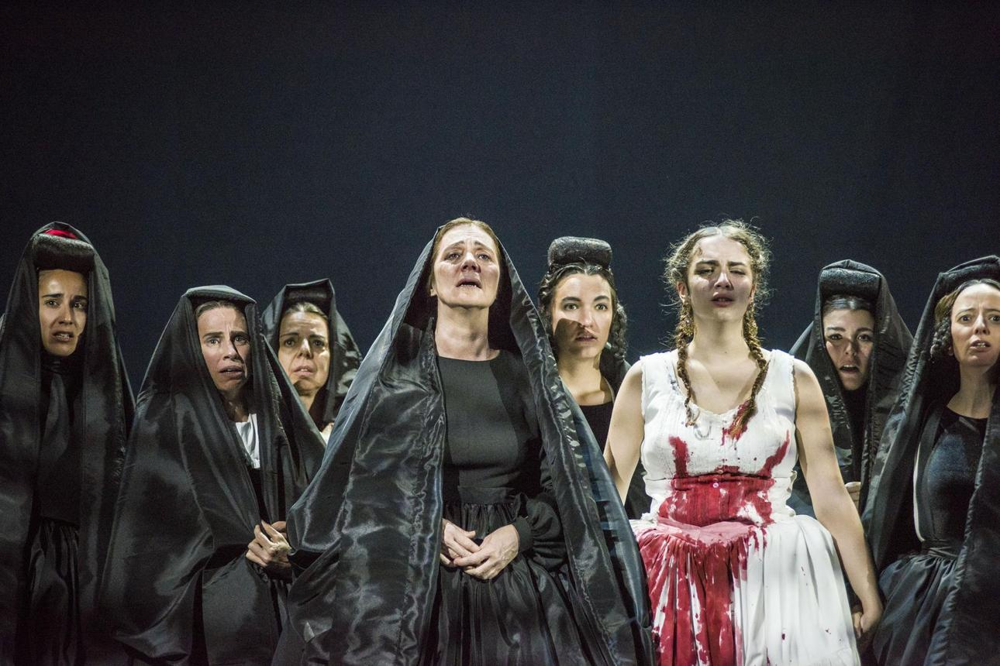
La estructura de Bodas de sangre presenta una evolución progresiva del conflicto:
| Acto | Función narrativa | Acontecimiento central |
|---|---|---|
| Acto I | Planteamiento | Se presentan las familias, el pasado de Leonardo y los preparativos del matrimonio. |
| Acto II | Nudo | Se celebra la boda y ocurre la huida de Leonardo y la Novia. |
| Acto III | Desenlace | La persecución termina con la muerte de Leonardo y el Novio. |
La estructura también presenta una transformación del ambiente:
La obra comienza y termina en el entorno de la Madre. Esta estructura circular refuerza la idea de que la tragedia vuelve a golpear a una familia que ya había sufrido pérdidas anteriores.
04
Es uno de los temas centrales de la obra. Leonardo y la Novia mantienen sentimientos que no han desaparecido a pesar de que sus vidas han tomado caminos diferentes.
Su relación representa una pasión que entra en conflicto con las responsabilidades familiares y las normas sociales. Lorca presenta el amor como una fuerza intensa que puede llevar a las personas a tomar decisiones impulsivas y asumir consecuencias dolorosas.
El honor tiene una gran importancia en la sociedad representada en la obra. La Madre considera que la huida de la Novia constituye una deshonra para su familia y una ofensa que debe ser respondida.
El comportamiento de los personajes está condicionado por la preocupación sobre lo que dirán los demás y por la reputación de sus familias.
La muerte está presente desde el inicio mediante las referencias a las armas, las antiguas rivalidades y los temores de la Madre.
Los acontecimientos parecen avanzar hacia un desenlace inevitable, especialmente después de que Leonardo y la Novia escapan juntos.
La obra representa una sociedad donde el matrimonio, la familia, la propiedad y la reputación tienen un gran valor.
La Novia se enfrenta a las expectativas de su entorno, mientras que la Madre y el Padre consideran que el matrimonio es una forma de asegurar la estabilidad familiar.
La Novia y Leonardo representan el deseo de vivir de acuerdo con los sentimientos personales, incluso cuando estos entran en contradicción con las obligaciones sociales.
Sin embargo, la obra también demuestra que las decisiones individuales pueden afectar profundamente a otras personas.
La rivalidad entre las familias y el deseo de defender el honor generan un ciclo de violencia que termina destruyendo a los protagonistas.
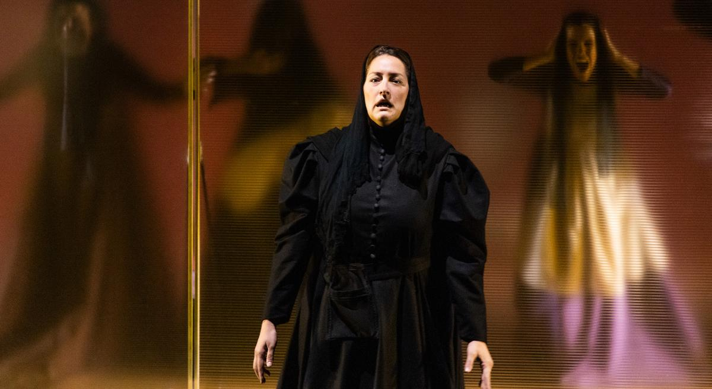
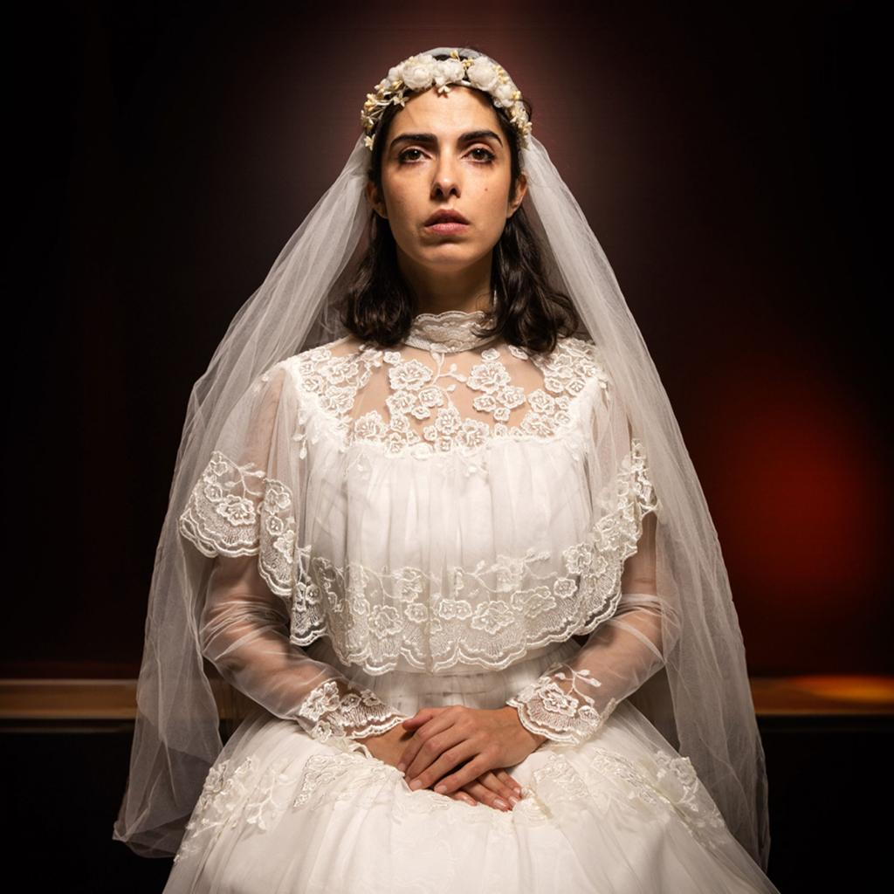
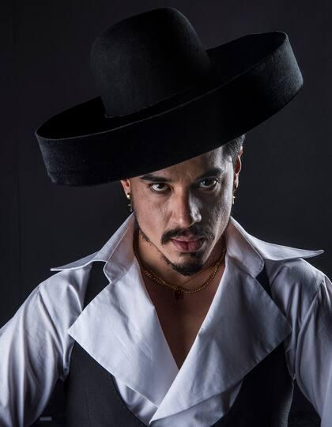
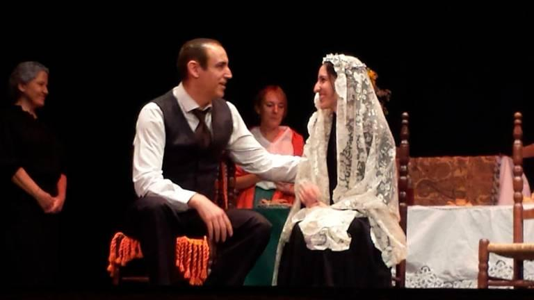
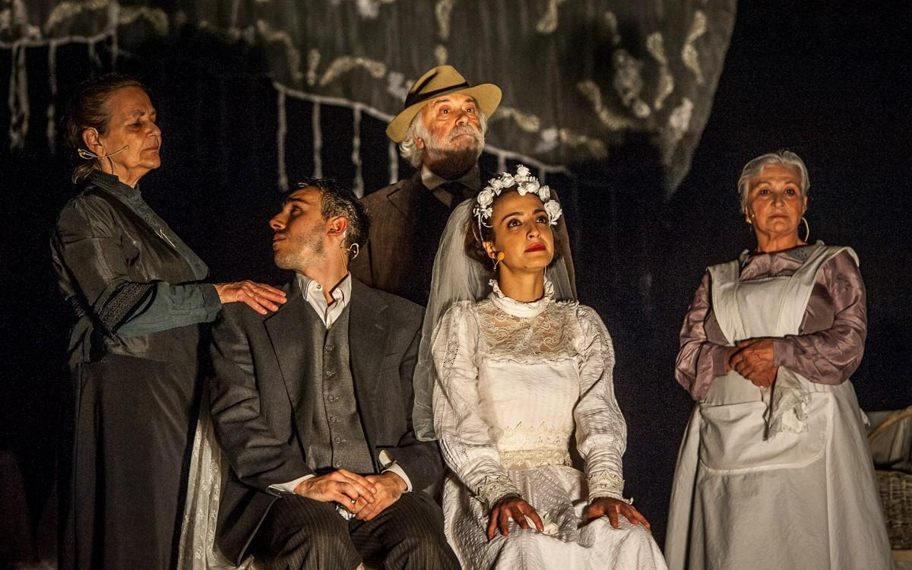
| Personaje | Función dentro de la obra |
|---|---|
| La Mujer de Leonardo | Esposa de Leonardo y madre de su hijo. Representa las consecuencias familiares de la infidelidad y el abandono. |
| La Suegra | Madre de la Mujer de Leonardo. Participa en la nana que anticipa la tragedia. |
| La Criada | Acompaña a la Novia y conoce sus sentimientos hacia Leonardo. |
| La Vecina | Proporciona información sobre las familias y sus antecedentes. |
| Los Leñadores | Comentan la huida y representan una voz colectiva que reflexiona sobre el destino. |
| La Luna | Personaje alegórico que contribuye a provocar el encuentro mortal. |
| La Mendiga | Representa simbólicamente a la Muerte y guía al Novio hacia los fugitivos. |
| Las Muchachas | Participan en los cantos del último cuadro y refuerzan el ambiente de tragedia. |
Federico García Lorca utiliza un estilo teatral que combina elementos realistas, poéticos y simbólicos. Entre sus características destacan:
Los símbolos son fundamentales para comprender el significado de Bodas de sangre. Lorca utiliza objetos y elementos naturales para representar emociones, fuerzas y acontecimientos que no siempre se expresan directamente mediante los diálogos.
| Símbolo | Significado e interpretación |
|---|---|
| La Luna | Representa la muerte y la fatalidad. Su luz permite que los fugitivos sean encontrados. |
| La Mendiga | Simboliza la Muerte y acompaña el desarrollo del desenlace trágico. |
| El caballo | Representa la pasión, la energía instintiva, el deseo y la fuerza que impulsa a Leonardo. |
| La sangre | Representa la vida, la pasión, los vínculos familiares y también la muerte violenta. |
| El cuchillo y la navaja | Son presagios de violencia, venganza y muerte. |
| El bosque | Representa un espacio misterioso donde predominan las fuerzas naturales y el destino. |
| El agua | Se relaciona con la vida, la fertilidad y, en determinadas escenas, con el contraste entre la tranquilidad y la inquietud. |
| El color blanco | Se relaciona con la boda, la pureza y las expectativas sociales, aunque contrasta con la tragedia posterior. |
| El color rojo | Se asocia con la sangre, la pasión, la vida y la muerte. |
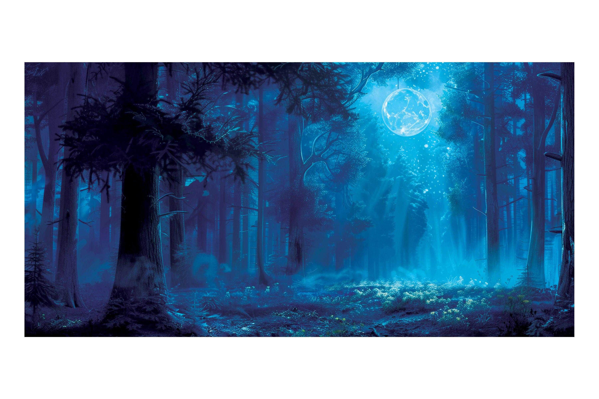
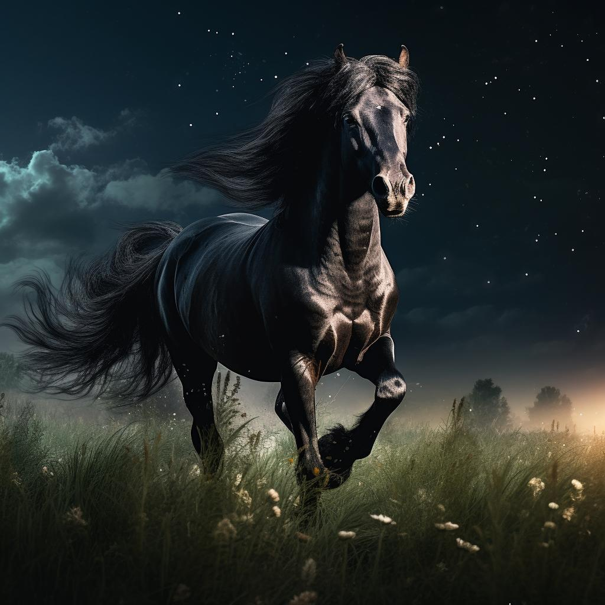
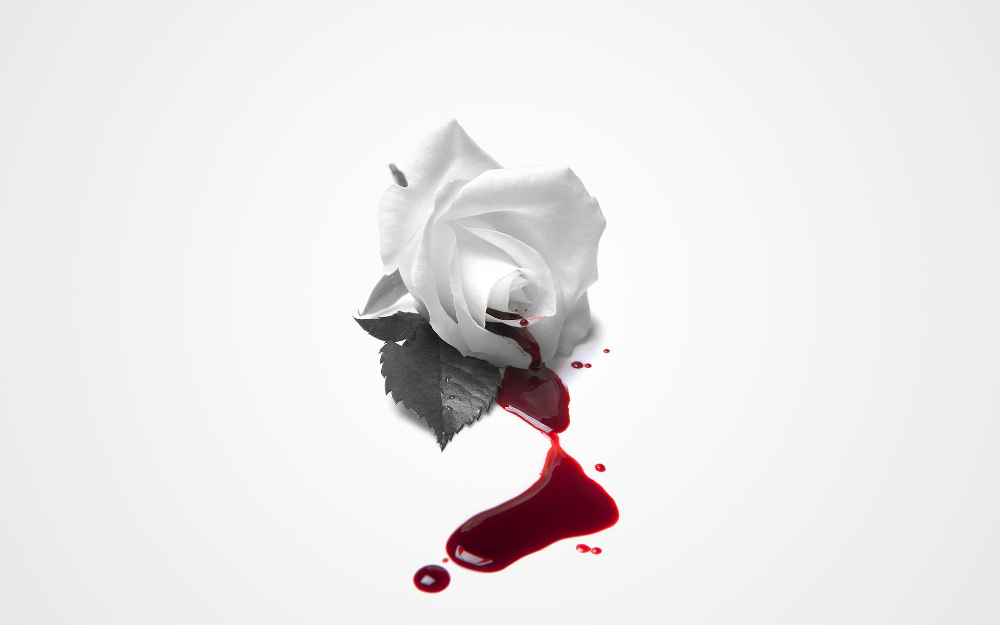
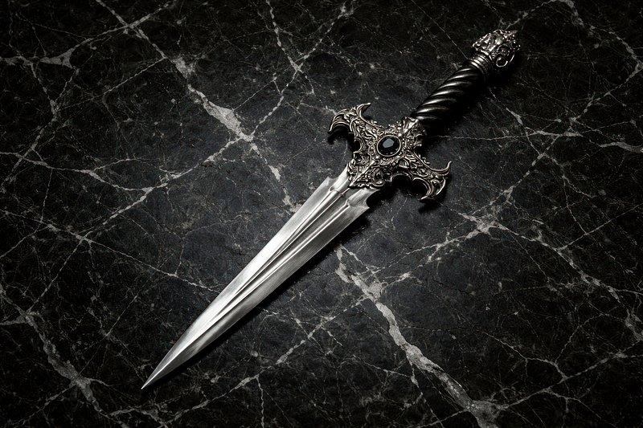
Las siguientes expresiones breves permiten identificar los temas fundamentales de la obra. Para una cita académica completa, debes añadir el número de página de la edición que utilices.
«La navaja, la navaja...»
Acto I, cuadro primero – La Madre.
Interpretación: representa el miedo de la Madre a la violencia y anticipa el desenlace mortal de la obra.
«¡Ay, caballo grande...»
Acto I, cuadro segundo – Nana.
Interpretación: el caballo representa la pasión y la fuerza instintiva que impulsan a Leonardo.
«La luna deja un cuchillo...»
Acto III, cuadro primero – La Luna.
Interpretación: relaciona la luz lunar con la muerte y la violencia que se aproxima.
«¡Porque yo me fui con el otro!»
Acto III, cuadro segundo – La Novia.
Interpretación: expresa el reconocimiento de la decisión tomada y la responsabilidad emocional que siente después de la tragedia.
Fuente: Bodas de sangre, Federico García Lorca.
05
La obra de Federico García Lorca se desarrolla en un periodo de importantes transformaciones políticas, económicas y culturales en España.
Durante las primeras décadas del siglo XX, el país presentaba grandes diferencias entre las zonas urbanas y rurales. Mientras algunas ciudades experimentaban procesos de modernización, muchas comunidades campesinas continuaban viviendo bajo estructuras tradicionales, con importantes desigualdades económicas y sociales.
En Andalucía, especialmente en las zonas rurales, la propiedad de la tierra estaba frecuentemente concentrada en manos de grandes propietarios. Muchos trabajadores dependían de las actividades agrícolas y vivían en condiciones económicas difíciles.
En este contexto, la familia, el matrimonio, la religión y la reputación social tenían una influencia importante en la vida de las personas.
Bodas de sangre representa un ambiente rural en el que las relaciones familiares, las propiedades y las tradiciones condicionan las decisiones de los personajes.
La obra no pretende describir a toda la sociedad española de manera uniforme, sino representar un entorno rural concreto y convertir sus conflictos en una tragedia de alcance universal.
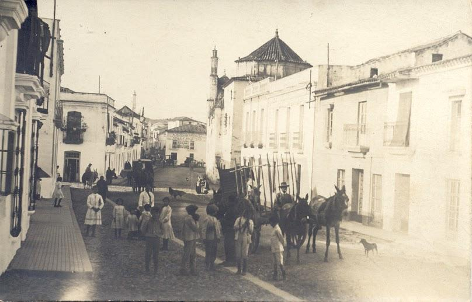
Uno de los aspectos más interesantes de Bodas de sangre es que su argumento tiene como punto de partida un acontecimiento real conocido como el Crimen de Níjar, ocurrido el 22 de julio de 1928 en las inmediaciones del Cortijo del Fraile, en Almería.
El acontecimiento involucró a Francisca Cañadas Morales, una joven que debía casarse con Casimiro Pérez Pino, pero que decidió huir con su primo Francisco Montes Cañadas poco antes de la celebración.
Durante la huida, la pareja fue interceptada y Francisco Montes recibió un disparo mortal. Francisca sobrevivió al ataque. La noticia fue difundida por la prensa y llamó la atención por los conflictos amorosos y familiares que rodearon el acontecimiento.
Federico García Lorca tomó esta historia como inspiración para construir una tragedia teatral. Sin embargo, modificó los acontecimientos, los personajes y las circunstancias para desarrollar una obra literaria con mayor profundidad simbólica.
Es importante comprender que la Novia, Leonardo y el Novio son personajes literarios, no reproducciones exactas de las personas involucradas en el acontecimiento histórico.
Federico García Lorca fue uno de los representantes más destacados de la Generación del 27, un grupo de escritores que renovó la literatura española mediante la combinación de las tradiciones populares con las nuevas corrientes artísticas y literarias.
Entre sus representantes se encuentran Federico García Lorca, Rafael Alberti, Luis Cernuda, Pedro Salinas, Jorge Guillén, Vicente Aleixandre y Dámaso Alonso.
Entre las principales características de este grupo destacan:
En Bodas de sangre, Lorca combina canciones populares, elementos tradicionales andaluces y recursos poéticos modernos para construir una tragedia que supera el simple relato de un conflicto amoroso.
Durante las primeras décadas del siglo XX, muchas mujeres españolas enfrentaban importantes limitaciones sociales, económicas y educativas. En determinados sectores de la sociedad predominaba la expectativa de que las mujeres debían dedicarse principalmente al matrimonio, la maternidad y el cuidado del hogar.
Además, la reputación familiar y las normas relacionadas con la sexualidad femenina podían ejercer una fuerte presión sobre sus decisiones personales. En los ambientes rurales, las tradiciones familiares y las condiciones económicas también influían en la elección de pareja y en la organización de los matrimonios.
Sin embargo, las experiencias de las mujeres no eran iguales para todas. Las oportunidades dependían de su clase social, educación, situación económica y lugar de residencia.
En Bodas de sangre, la Novia representa el conflicto entre sus deseos personales y las expectativas sociales relacionadas con el matrimonio. Por su parte, la Madre representa una figura femenina que ha construido su vida alrededor de la familia, la maternidad y la protección de sus hijos.
Ambos personajes muestran diferentes formas de experimentar las responsabilidades y limitaciones que podía enfrentar una mujer en aquella sociedad.
En el contexto social representado por Lorca, el matrimonio no era solamente una decisión sentimental. También podía estar relacionado con intereses económicos, alianzas familiares, propiedades y continuidad de los apellidos.
En la obra, el Padre de la Novia y la Madre del Novio consideran que el matrimonio puede fortalecer la posición de ambas familias. La conversación sobre las tierras y las propiedades demuestra que la unión matrimonial también tiene una dimensión económica.
Por otra parte, el honor familiar ocupa un lugar central. La huida de la Novia y Leonardo es interpretada como una deshonra que afecta a las familias y provoca una reacción violenta. La Madre, especialmente, considera que la reputación y la memoria de su familia han sido nuevamente atacadas.
Relación con la actualidad: la obra permite reflexionar sobre la diferencia entre construir una relación por decisión propia y hacerlo por presión familiar, económica o social. También invita a cuestionar la idea de que el honor de una familia deba defenderse mediante la violencia.
La religión católica tenía una presencia importante en la sociedad española durante la época en que Lorca escribió Bodas de sangre. La Iglesia influía en diferentes aspectos de la vida social, como las celebraciones matrimoniales, las normas morales, la educación y las costumbres familiares.
En la obra, la boda se presenta como una ceremonia social y religiosa que simboliza la unión de dos personas y sus familias.
Sin embargo, la historia muestra una contradicción: aunque la celebración representa la unión matrimonial y el establecimiento de una nueva familia, los sentimientos de la Novia hacia Leonardo impiden que esa unión se desarrolle de manera estable.
La religión aparece principalmente como parte del contexto cultural y de las tradiciones de la comunidad. No obstante, el conflicto central de la obra no es una discusión teológica, sino la tensión entre los sentimientos individuales, el matrimonio, el honor y las normas sociales.
Los personajes femeninos de Bodas de sangre permiten analizar diferentes formas de vivir la maternidad, el matrimonio, el amor y la autoridad.
| Personaje | Representación social y femenina |
|---|---|
| La Madre | Representa la protección familiar, la maternidad, el dolor y la defensa del honor. |
| La Novia | Representa el conflicto entre el deseo individual y las expectativas sociales. |
| La Mujer de Leonardo | Representa las consecuencias del abandono y la infidelidad dentro del matrimonio. |
| La Suegra | Representa la transmisión de las costumbres y tradiciones familiares. |
| La Criada | Representa una voz cercana a la Novia, capaz de observar sus conflictos y advertir sobre sus consecuencias. |
Una interpretación importante es que Lorca no presenta a todas las mujeres como víctimas pasivas. Algunas tienen autoridad, expresan sus opiniones y toman decisiones, aunque sus posibilidades estén condicionadas por el entorno social.
La Novia es especialmente interesante porque intenta defender su libertad emocional, pero termina enfrentándose a las consecuencias de sus decisiones y a las normas de una sociedad que juzga su comportamiento.
06
Esta sección permite relacionar Bodas de sangre con otras disciplinas y manifestaciones culturales. Los conflictos de la obra pueden comprenderse desde diferentes perspectivas, porque involucran emociones, comportamientos, relaciones familiares, valores sociales y representaciones artísticas.
La psicología permite analizar los pensamientos, emociones y comportamientos de los personajes. En esta sección utilizaremos conceptos actuales para interpretar sus conductas.
No se trata de diagnósticos psicológicos realizados por el autor ni de evaluaciones clínicas de personajes ficticios.
La Madre ha experimentado la pérdida violenta de su esposo y de su hijo mayor. Estas experiencias influyen en su manera de interpretar los acontecimientos y en su temor constante a las armas.
Desde una perspectiva psicológica, su comportamiento puede relacionarse con los procesos de duelo y con el miedo anticipatorio, que aparece cuando una persona experimenta preocupación intensa ante la posibilidad de que ocurra nuevamente un acontecimiento doloroso. En la obra, la Madre teme perder a su último hijo y considera que la violencia puede repetirse debido a las antiguas rivalidades familiares.
Interpretación psicológica: su conducta demuestra cómo las experiencias traumáticas pueden influir en la percepción del peligro, en las decisiones personales y en las relaciones familiares. No obstante, no podemos afirmar que tenga un trastorno de estrés postraumático, ya que la obra no ofrece información clínica suficiente para establecerlo.
La Novia se encuentra dividida entre dos situaciones: por un lado, desea cumplir con el matrimonio que ha aceptado y, por otro, continúa sintiendo una fuerte atracción por Leonardo.
Esta situación puede relacionarse con la disonancia cognitiva, concepto psicológico desarrollado por Leon Festinger. Ocurre cuando una persona experimenta tensión al mantener pensamientos, valores o decisiones que entran en contradicción. En la obra, la Novia intenta justificar su matrimonio y, al mismo tiempo, no consigue desprenderse de sus sentimientos por Leonardo.
Interpretación psicológica: su comportamiento permite analizar el conflicto entre las decisiones racionales, las emociones y las expectativas sociales.
Leonardo está casado y tiene un hijo, pero continúa buscando a la Novia y finalmente escapa con ella. Su comportamiento muestra una contradicción entre las responsabilidades que ha asumido y sus deseos personales.
Desde la psicología, puede analizarse mediante conceptos como la impulsividad y la dificultad para regular los impulsos emocionales. La impulsividad se relaciona con la tendencia a actuar rápidamente sin considerar suficientemente las consecuencias de una decisión.
Interpretación psicológica: Leonardo representa el conflicto entre el deseo inmediato y las responsabilidades familiares, especialmente cuando sus decisiones terminan afectando a su esposa, su hijo y otras personas. Esto no significa que el personaje tenga un trastorno de control de impulsos.
La Mujer de Leonardo experimenta la distancia afectiva de su esposo y descubre que continúa interesado en otra mujer. Su situación permite analizar las consecuencias emocionales de la infidelidad y el abandono dentro de una relación.
Desde una perspectiva psicológica, se pueden estudiar sentimientos como la inseguridad, la tristeza, la frustración y el miedo a perder la estabilidad familiar.
Interpretación psicológica: su personaje demuestra que los conflictos amorosos no afectan únicamente a quienes mantienen la relación sentimental, sino también a las personas que forman parte de su entorno familiar.
Bodas de sangre presenta diferentes problemas filosóficos relacionados con las decisiones humanas y las consecuencias de nuestros actos.
| Concepto | Relación con la obra |
|---|---|
| Libertad | La Novia intenta decidir sobre sus sentimientos y su vida afectiva. |
| Destino | Los presagios y símbolos anuncian un desenlace trágico. |
| Responsabilidad | Los personajes deben enfrentar las consecuencias de sus decisiones. |
| Moral | Se cuestionan las normas sociales relacionadas con el matrimonio y el honor. |
| Justicia | La venganza aparece como una respuesta a los conflictos familiares, pero termina generando más sufrimiento. |
| Existencia | La muerte obliga a los personajes y al espectador a reflexionar sobre la fragilidad de la vida. |
Reflexión filosófica: ¿los personajes estaban destinados a terminar en tragedia o sus decisiones y las normas sociales que los rodeaban contribuyeron a provocar ese desenlace?
Esta pregunta permite analizar la relación entre libertad individual, responsabilidad y destino. Una interpretación interesante es que Lorca presenta el destino como una fuerza trágica, pero también muestra cómo las decisiones humanas, los conflictos familiares y las estructuras sociales contribuyen a construirlo.
Desde la sociología, la obra permite analizar cómo las normas sociales influyen en el comportamiento de las personas y en la organización de las familias.
En el ambiente rural representado por Lorca, el honor familiar está relacionado con la reputación, el matrimonio, la sexualidad y la posición social. La huida de la Novia y Leonardo no es considerada únicamente una decisión sentimental, sino una acción que afecta la imagen pública de las familias.
También se observa cómo las rivalidades familiares pueden mantenerse durante generaciones y convertirse en una fuente de violencia.
Relación con la actualidad: aunque las sociedades han cambiado, todavía existen situaciones en las que las personas sienten presión familiar para elegir pareja, mantener una relación, cumplir determinadas expectativas o evitar críticas sociales.
La obra permite cuestionar estas presiones y reflexionar sobre la importancia de resolver los conflictos mediante el diálogo y el respeto, en lugar de recurrir a la violencia.
La pintura Duelo a garrotazos, de Francisco de Goya, representa a dos hombres enfrentados con garrotes mientras se encuentran hundidos en un paisaje de tierra. La obra permite reflexionar sobre la violencia, la agresividad y los enfrentamientos humanos.
Su relación con Bodas de sangre puede establecerse mediante el conflicto entre el Novio y Leonardo, quienes terminan enfrentándose hasta provocar la muerte de ambos. En las dos obras aparece una representación de la violencia entre seres humanos y de las consecuencias destructivas de los enfrentamientos.
Interpretación: ambas manifestaciones artísticas permiten cuestionar la violencia como mecanismo para resolver conflictos. Esta comparación es temática y no significa que Lorca se haya inspirado directamente en la pintura de Goya.
Una comparación literaria interesante es con Romeo y Julieta, de William Shakespeare. Ambas obras presentan relaciones amorosas que se enfrentan a conflictos familiares y sociales.
| Aspecto | Bodas de sangre | Romeo y Julieta |
|---|---|---|
| Autor | Federico García Lorca | William Shakespeare |
| Conflicto amoroso | Leonardo y la Novia mantienen una pasión que interfiere con el matrimonio de ella. | Romeo y Julieta se enamoran a pesar de la rivalidad de sus familias. |
| Conflicto familiar | Las antiguas rivalidades generan violencia y venganza. | Los enfrentamientos entre Montescos y Capuletos impiden la unión de los jóvenes. |
| Destino | Los presagios anuncian la tragedia. | Los acontecimientos conducen a un desenlace fatal. |
| Muerte | Leonardo y el Novio mueren en el enfrentamiento. | Romeo y Julieta mueren como consecuencia de sus circunstancias. |
| Tema central | Pasión, honor, destino y violencia familiar. | Amor, rivalidad familiar, juventud y destino. |
Conclusión comparativa: ambas tragedias muestran cómo los conflictos familiares y las normas sociales pueden destruir las relaciones amorosas. Sin embargo, Bodas de sangre presta especial atención a la pasión, la honra, las tradiciones rurales y la violencia, mientras que Romeo y Julieta se centra en el amor juvenil enfrentado a la rivalidad entre dos familias.
Las siguientes películas permiten estudiar los temas de Bodas de sangre desde diferentes perspectivas. Es importante distinguir entre las adaptaciones de la obra y las películas que únicamente comparten temas similares.
Directora: Paula Ortiz.
Adaptación cinematográfica.
Es una adaptación de Bodas de sangre que presenta la historia del triángulo amoroso entre la Novia, Leonardo y el Novio. Permite observar cómo los símbolos, las emociones y los conflictos de la obra teatral pueden trasladarse al lenguaje cinematográfico mediante imágenes, música, fotografía y actuaciones. Es la comparación audiovisual más directa para este proyecto.
Fuente: Instituto Cervantes y Biblioteca Nacional de España.
Director: Baz Luhrmann.
Tema: amor, rivalidad familiar y tragedia.
La película presenta la historia de dos jóvenes que se enamoran a pesar del enfrentamiento entre sus familias. Su relación con Bodas de sangre se encuentra en la manera en que las rivalidades familiares y las circunstancias sociales dificultan las relaciones amorosas y contribuyen al desenlace trágico.
Director: Steven Spielberg.
Tema: rivalidad, violencia y amor prohibido.
La película presenta una historia de amor que se desarrolla en medio de la rivalidad entre dos grupos enfrentados. Al igual que en Bodas de sangre, el amor de los protagonistas se encuentra condicionado por los conflictos colectivos y la violencia que los rodea.
Conclusión de las conexiones cinematográficas: las películas permiten reconocer que los conflictos relacionados con el amor, la rivalidad, la libertad y la violencia son temas universales que pueden expresarse mediante diferentes lenguajes artísticos. La novia es una adaptación directa, mientras que las otras dos películas establecen relaciones temáticas.
07
¿Ha cambiado la forma de entender el amor y el matrimonio? Se propone comparar las expectativas sociales representadas en Bodas de sangre con las relaciones familiares y sentimentales de la sociedad actual.
| Aspecto | Época representada en la obra | Actualidad |
|---|---|---|
| Matrimonio | Podía estar condicionado por intereses económicos y familiares. | Se reconoce cada vez más la importancia de la decisión libre de la pareja. |
| Honor familiar | La reputación podía tener gran influencia en las decisiones personales. | Se cuestiona que la reputación familiar determine la vida de las personas. |
| Libertad femenina | Existían fuertes expectativas sobre el comportamiento y las decisiones de las mujeres. | Las mujeres cuentan con mayores derechos y posibilidades de decisión. |
| Relaciones amorosas | Las normas sociales podían limitar la elección de pareja. | Existe mayor diversidad de formas de establecer relaciones. |
| Violencia familiar | En determinados entornos se justificaba mediante ideas tradicionales de honor y venganza. | Se reconoce la importancia de prevenir la violencia y proteger los derechos individuales. |
Conclusión de la actividad: aunque las sociedades han experimentado importantes cambios, todavía existen situaciones en las que las personas enfrentan presiones familiares y sociales al momento de tomar decisiones sentimentales. La obra invita a cuestionar estas imposiciones y a defender las relaciones basadas en el respeto y la libertad.
Relaciona cada símbolo con su significado. Selecciona una respuesta para cada elemento.
Tema: ¿el amor justifica cualquier decisión? Se propone organizar un debate grupal en el que los participantes defiendan diferentes posiciones.
Al finalizar, cada grupo deberá explicar qué postura considera más razonable y argumentar su respuesta utilizando acontecimientos de la obra.
Bodas de sangre es una obra que permite reflexionar sobre los conflictos que pueden surgir cuando los sentimientos personales se enfrentan a las expectativas familiares y sociales.
A través de la historia de la Novia, Leonardo y el Novio, Federico García Lorca demuestra cómo las decisiones humanas pueden desencadenar consecuencias que afectan no solamente a los protagonistas, sino también a sus familias y a las personas que los rodean.
La Madre representa el dolor provocado por la pérdida y la violencia, mientras que la Novia simboliza el conflicto entre la libertad individual y las normas sociales. Leonardo, por su parte, muestra cómo la pasión y los deseos personales pueden entrar en contradicción con las responsabilidades familiares.
Los símbolos de la Luna, el caballo, la sangre y los cuchillos permiten comprender que la tragedia no se construye únicamente mediante las acciones de los personajes, sino también mediante imágenes poéticas que anticipan el desenlace.
Finalmente, la obra invita a cuestionar la violencia, la venganza y las imposiciones sociales, demostrando que el honor no debería estar por encima de la vida humana y que las relaciones deben construirse desde la libertad, la responsabilidad y el respeto.
Bodas de sangre nos enseña que los sentimientos humanos pueden entrar en conflicto con las normas sociales, las responsabilidades familiares y las expectativas de otras personas. Consideramos que uno de los principales mensajes de la obra es la importancia de tomar decisiones con libertad, pero también con responsabilidad, reconociendo que nuestras acciones pueden afectar a quienes nos rodean. La historia demuestra que la violencia y la venganza nunca representan una solución verdadera, ya que solamente generan más sufrimiento y destruyen familias. Por ello, creemos que el respeto, la comunicación y la capacidad de resolver los conflictos mediante el diálogo son fundamentales para construir relaciones saludables.
08